行程窗口：2026-10-04 上午出发 → 2026-10-06 晚上返回宜宾
需求约束：不赶 / 适合休养 / 步行量小 / 要有特别的自然景色或民族风情 / 高铁或自驾 / 带老人出行
本版说明：只保留 D 兴义、I 西昌、L 紫云格凸河、M 黄果树 四条线，已去掉线路 A / B 及所有非线路章节。格凸河改用官方「老少皆宜」动线，全程含游船。每个景点和通勤环节下方都配了图。
最后更新：2026-10-03 16:01
关于图片的说明（请先读这一条）
文中所有实景照片都来自 维基共享资源（Wikimedia Commons），均为 CC0 / CC BY / CC BY-SA / 公有领域等可自由使用的许可，已下载到本地
_图片文件夹，图注里标注了许可类型。⚠️ 有三处我没有找到可自由使用的实景照片：格凸河、建昌古城、黄果树水帘洞。Commons 上这三个地点的自由许可图片数量为零。对此我没有去盗用版权图片，而是自己画了路线示意图（标注为"自制示意图"）——对格凸河来说，一张标清楚"哪段坐船、哪段走路、哪段要爬台阶"的动线图，其实比一张风景照更有用。
| D 兴义 | I 西昌 | L 紫云格凸河 | M 黄果树专线 | |
|---|---|---|---|---|
| 核心 | 两万座锥状峰林 + 176 米瀑布群 | 邛海 + 凉山彝族 | 世界最高古河道 + 苗族徒手裸攀 | 亚洲第一大瀑布 |
| 自然震撼 | ★★★★★ | ★★★★ | ★★★★★ | ★★★★★ |
| 民族风情 | ★★★★（布依族） | ★★★★★（彝族） | ★★★★★（苗族） | ★★ |
| 天气（10/4–6） | ★★★★☆ 21–24℃ | ★★ 连下两天雨 | ★★★★★ 三天不下雨 | ★★★★★ 三天不下雨 |
| 票务 | ⚠️ 返程须两段 | ❌❌ 返程已售空 | ✅ 返程一张票 | ⚠️ 预约是硬门槛 |
| 湿滑风险 | ⚠️ 中（水雾 + 栈道） | 低 | 中（雨后石阶） | ⚠️ 中（水雾 + 台阶） |
| 步行量 | 低（观光车为主） | 低 | 可缩到极低（全程坐船） | 中（分三天后可控） |
| 带老人 | ★★★ 景区好但路途折腾 | ★ 只剩站票 | ★★★★ 走官方「老少皆宜」线 | ★★★★ |
| 单程 | 4 小时直达 | 3.2–4.3 小时需中转 | 2.5 小时 + 1.5 小时车 | 2.5 小时 + 40 分直通车 |
| 本窗口可行性 | ✅ 可行 | ❌ 不可行，需改期 | ✅ 可行 | ✅ 可行 |
一句话结论：带老人且这个窗口出发，L（格凸河）和 M（黄果树）是最优解——天气最好、返程最稳；D（兴义） 景色最饱满但路途最折腾；I（西昌） 条件最匹配但票已封死，只能改期。
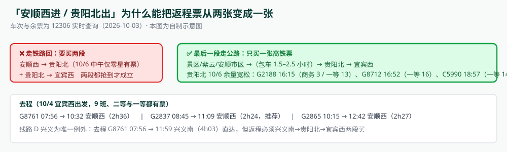
L 和 M 两条线都用同一个技巧：去程走高铁到安顺西，返程最后一段走公路到贵阳北再上高铁。这样返程只需要买一张票，而贵阳北 10/6 的余量很宽松。
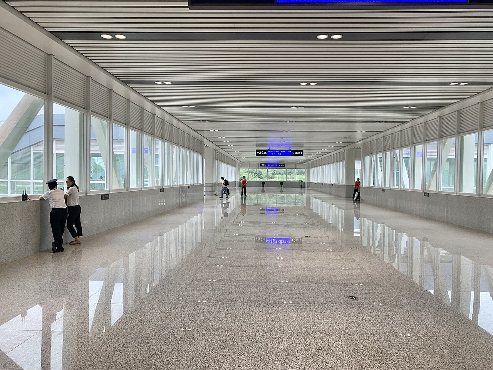
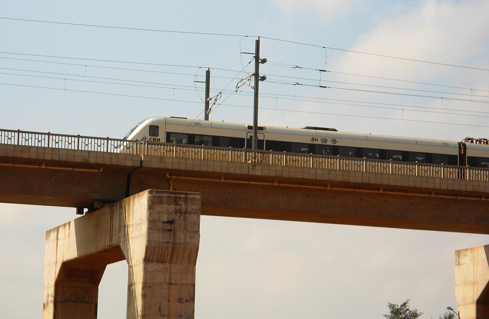
10/4 从宜宾西出发的可选班次（9 班，二等与一等都有票）：
| 车次 | 时刻 | 历时 | 去哪条线 |
|---|---|---|---|
| G8761 | 07:56 → 11:59 兴义南 | 4h03 | 线路 D 唯一合适班次 |
| G8761 | 07:56 → 10:32 安顺西 | 2h36 | L / M 均可 |
| G2837 | 08:45 → 11:09 安顺西 | 2h24 | L / M 推荐 |
| G2865 | 10:15 → 12:42 安顺西 | 2h27 | L / M 可选 |
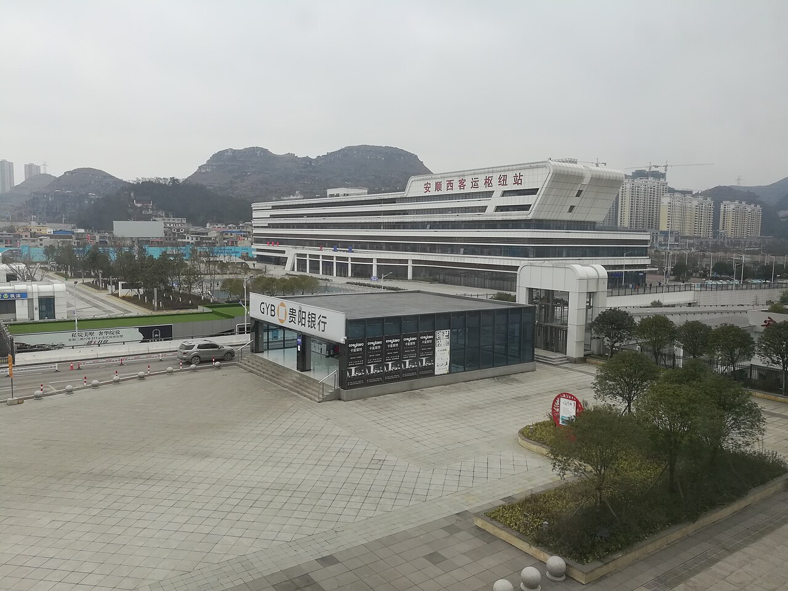
10/6 返程（贵阳北 → 宜宾西，余量宽松）：
| 车次 | 时刻 | 历时 | 席别余量 |
|---|---|---|---|
| G918 | 15:09 → 16:52 | 1h43 | 商务 1 / 一等有 / 二等有 |
| G2188 | 16:15 → 18:05 | 1h50 | 商务 3 / 一等 13 / 二等 6 ← 带老人首选 |
| G8712 | 16:52 → 18:58 | 2h06 | 一等 16 / 二等有 ← 余量最宽松 |
| C5990 | 18:57 → 20:50 | 1h53 | 一等 14 / 二等 20 |
| C5972 | 21:41 → 23:34 | 1h53 | 一等有 / 二等 6 |
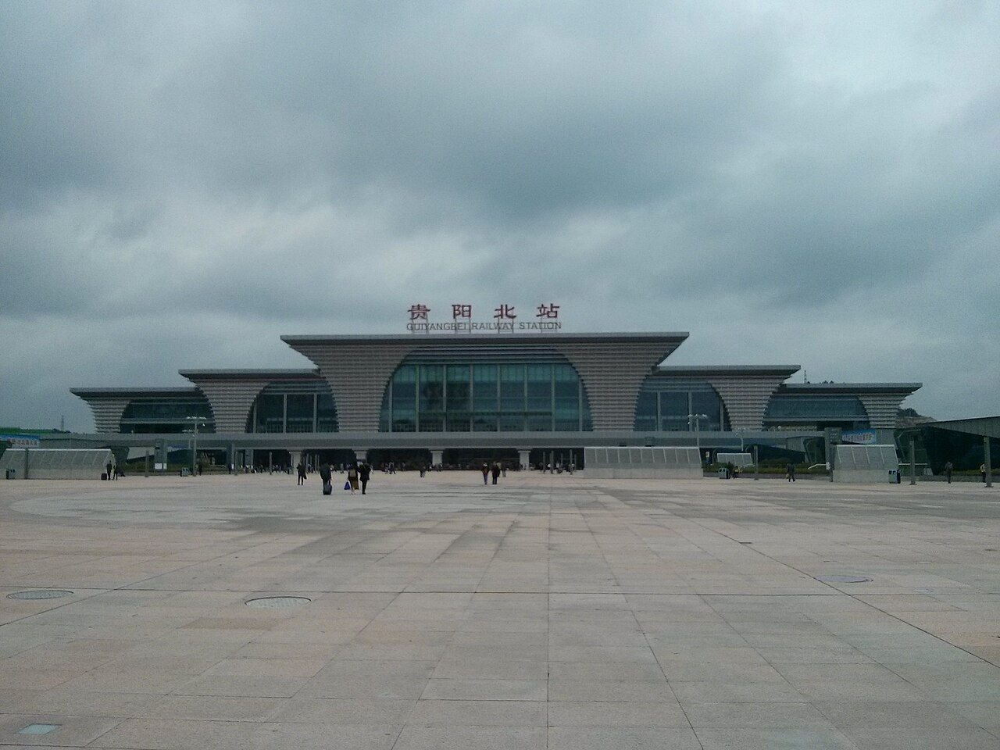
本版最重要的改动：上一版我给的是"原路折返、不乘船"的精简走法。这是错的——格凸河官方的"老少皆宜"路线本身就是以游船为核心的，而且 2026-09-29（四天前）紫云县官方媒体刚发布了两条差异化路线，其中路线一明确标注 "适合：老人、小孩、家庭出游"，全程"以平缓步道、观光车、游船为主，几乎无陡峭山路，步行强度极低"。
这一版直接采用官方动线。坐船不是可选项，而是主线。
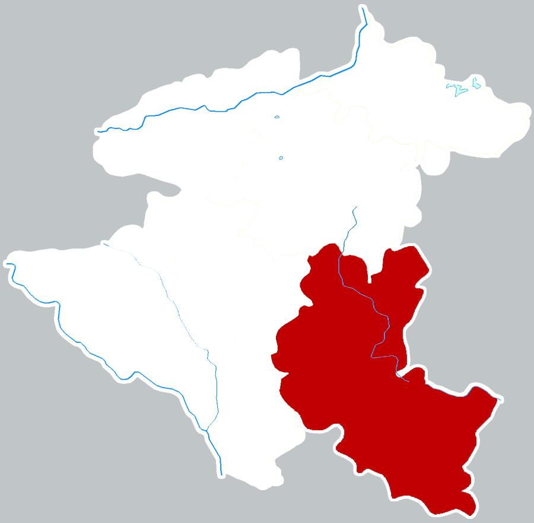
紫云苗族布依族自治县，隶属贵州省安顺市，距安顺市区约 77 公里。
"格凸"是苗语，意为"跳花圣地"——这片被喀斯特绝壁与穿洞环绕的河谷，自古就是苗族同胞朝圣与聚居之地。
格凸河穿洞风景名胜区的身份：国家级风景名胜区 + 国家 4A 级旅游景区 + 中国自然文化和自然双遗产地。官方宣传语里概括的内容是：震撼溶洞、深邃天坑、原生峰林、幽深峡谷、天地神光、地下河流碧绿如玉，以及厚重的亚鲁王文化、神秘的悬棺洞藏、紧张刺激的蜘蛛人攀岩、山灵水秀的大河苗寨。
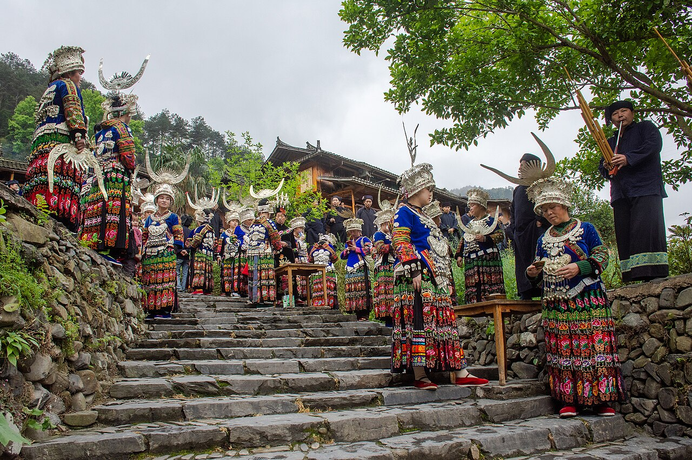
贵州苗族 · Wikimedia Commons, CC BY-SA 4.0 ⚠️ 此为贵州苗族的一般形象照，非格凸河当地实拍——Commons 上没有格凸河的自由许可照片
天气是它最大的加分项（和黄果树并列全文最好）：
| 日期 | 紫云天气 | 说明 |
|---|---|---|
| 10/4 | 阴 20/15℃ | 不下雨，适合赶路 + 轻度活动 |
| 10/5 | 多云 21/14℃ | 主力日，晴天上午 8–9 点可能有神光 |
| 10/6 | 多云 24/15℃ | 三天里最好，可补看 |
对比一下本文另外两条：兴义 10/4 小雨转多云；西昌 10/4、10/5 连下两天小雨。紫云和黄果树（同属安顺）是本文唯一"三天都不下雨、而且不冷"的方向。
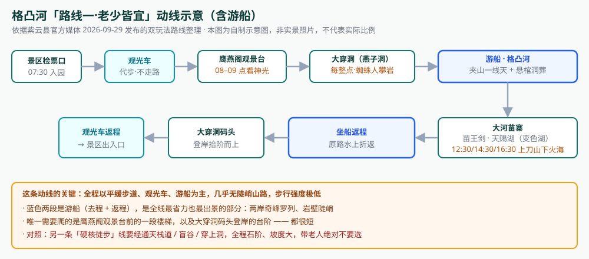
官方原文动线：
景区检票口 → 观光车 → 鹰燕阁观景台（看神光）→ 大穿洞（燕子洞 + 蜘蛛人攀岩表演）→ 游船游格凸河 → 大河苗寨（民族文化展演 + 上刀山下火海表演）→ 坐船返程 → 大穿洞码头 → 观光车返程 → 景区出入口
官方对这条线的定性（原话）：
主打轻松省力、沉浸式观光，全程以平缓步道、观光车、游船为主，几乎无陡峭山路，步行强度极低，老人小孩也能轻松驾驭，不用赶路、无需费力，慢悠悠解锁格凸河核心美景，是国庆家庭出游的首选路线。
整条路线以"观光、休憩、体验"为主，不用爬坡赶路，累了可随时驻足拍照、临水吹风。
早起进入景区后直接乘坐观光车到鹰燕阁观景台。这一段完全不需要走路，是整条线"低强度"的第一个保障。
从观光车下来后爬一段楼梯就到，这是第一个打卡点位。
⭐ 国庆期间，晴天上午 8 点至 9 点可邂逅绝美"天神光"（官方原文）。
⚠️ 这是全线第一个需要爬台阶的地方，但很短。阴雨天没有神光——紫云 10/5、10/6 都是多云，有机会但不保证，别把全部期待压在这上面。
| 项目 | 信息 |
|---|---|
| 规模 | 天然拱门式伏流洞口，高约 116 米、宽约 25 米；洞内地下湖蜿蜒约 270 米 |
| 距起点 | 约 0.8 公里（这是它对老人友好的关键） |
| 金丝燕 | 清明到重阳（4 月–10 月中旬），数十万只金丝燕晨出暮归 |
⭐ 蜘蛛人攀岩表演 —— 这是格凸河最独特的人文体验：
10 月初的金丝燕状态：仍在期内，但重阳约在 10 月中旬，已接近尾声，要赶早晚。
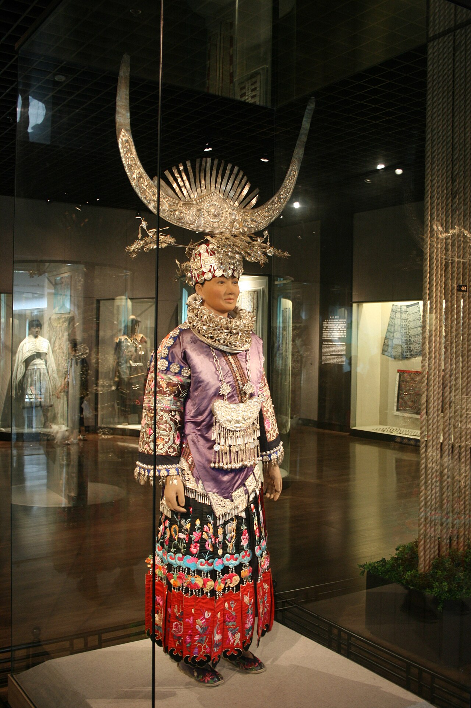
贵州苗族（20 世纪） · Wikimedia Commons, CC0 ⚠️ 非格凸河实拍
看完蜘蛛人表演后，泛舟碧水之上（官方原文）：
船票：游船 40 元，分段乘坐。另有信息源提到"进景区先坐船到燕子洞"的走法，说明船是分段运营的，具体分段方式请现场确认。
抵达大河苗寨后：
⏰ 大河苗寨表演场表演时间：每日 12:30、14:30 和 16:30（官方公布）
这一条很重要——它决定了你的游船时刻要怎么卡。
看完表演后坐船返程，在大穿洞码头下船，登岸拾阶而上后坐观光车返程，最后回到景区出入口。
⚠️ "登岸拾阶而上"是全线第二个（也是最后一个）需要爬台阶的地方。
官方同时发布了路线二（高难度、强体验、徒步爱好者专属），行程是：
检票口 → 观光车 → 鹰燕阁观景台 → 大穿洞 → 望天洞 → 通天栈道 → 盲谷·原始森林 → 方竹林 → 回音谷 → 穿上洞 → 祈福洞 → 盲谷码头 → 游船 → 大河苗寨 → 坐船返程 → 大穿洞码头 → 观光车 → 出口
官方对它的描述：
全程以石阶栈道、山林徒步为主，包含长距离爬坡、林间穿行，台阶密集且部分路段陡峭，徒步强度大、耐力要求高，适合体能充沛的户外爱好者，组队出行。
通天栈道依山而建，全程都是石阶，蜿蜒向上、坡度较大，是整条路线最考验体能的路段。
从穿上洞出来后便一路都是下山，俗话说"上山容易下山难"，当你不断登高后再下山，腿脚禁不住打颤颤。
这条线上才有的点位（如果你不带老人、体能很好，才考虑）：
⚠️ 官方安全提醒原话："进阶路线盲谷、栈道路段较为险峻，请勿脱离步道独行，量力而行，注意脚下安全。"
紫云没有火车站（12306 确认，周边只有关岭、六枝），所以必须"高铁 + 汽车"。但正因为最后一段是公路，进出可以选不同的高铁站：
| 段 | 方式 | 耗时 |
|---|---|---|
| 去程 宜宾西 → 安顺西 | 高铁，G2837 08:45→11:09（2h24，二等/一等都有票） | 2h24 |
| 安顺西 → 紫云县城 | 包车 / 班车 | 约 1.5 小时 |
| 紫云县城 → 格凸河景区 | 县城有班车或包车 | 待现场确认 |
| 返程 紫云 → 贵阳北 | 包车 / 班车 | 约 2–2.5 小时 |
| 贵阳北 → 宜宾西 | 高铁，G2188 16:15→18:05（商务 3 / 一等 13） | 1h50 |
自驾：导航"格凸河景区"，从安顺沿安紫高速方向约 77 公里即到，景区设有停车场。
✅ 返程只需要买一张高铁票。
| 时间 | 安排 | 细节 |
|---|---|---|
| 08:00 | 宜宾市区 → 宜宾西站 | 打车约 25–30 分钟 |
| 08:45 | G2837 宜宾西 → 11:09 安顺西（2h24） | 备选 G8761 07:56→10:32（更早，给接驳留余量） |
| 11:20 | 安顺西 → 紫云县城（包车约 1.5 小时） | ⚠️ 出发前就要把车谈好，这是全线最容易卡住的一环 |
| 12:50 | 抵紫云县城，午餐 | |
| 14:00 | 入住：格凸河景区附近民宿，或紫云县城 | 官方建议"前一晚宿紫云县城或景区附近民宿"，因为第二天要早上山 |
| 15:00–18:00 | 轻度活动：县城闲逛 / 民宿休息 / 景区外围河畔散步 | 10/4 是阴天不下雨，可以走动。但不要今天进景区——核心体验在明天早上 |
| 19:00 | 晚餐，早睡 |
⭐ 这一天完全按官方「路线一」走。时刻表的设计关键是：先赶 09:00 的第一场蜘蛛人，再坐船，让抵达大河苗寨的时间落在 12:30 的第一场民俗表演上。
| 时间 | 安排 | 细节 |
|---|---|---|
| 06:30 | 起床、早餐 | 住景区附近的最大价值在这里 |
| 07:30 | 入园 | 早起进入景区（官方原话）。早晨能赶上金丝燕晨出，河谷也不闷热 |
| 07:40 | 乘观光车 → 鹰燕阁观景台 | 不走路 |
| 08:00–09:00 | 鹰燕阁观景台 | ⭐ 晴天上午 8–9 点可能有"天神光"。爬一段楼梯 |
| 09:00 | 步行前往大穿洞（燕子洞） | 距起点约 0.8 公里，平缓 |
| 09:00–10:30 | 大穿洞：看 09:00 或 10:00 整点的蜘蛛人攀岩，看金丝燕、洞内地下湖 | 116 米高的洞门 + 270 米地下湖 |
| 10:40–11:40 | ⭐ 游船游格凸河 | 泛舟碧水，两岸奇峰罗列；沿途夹山一线天 + 悬棺洞葬 |
| 11:45 | 抵大河苗寨 | |
| 11:45–12:25 | 沿村寨平缓步道打卡 苗王剑、天赐湖（变色湖）；看田园风光 | 平缓，可随时歇 |
| 12:30–13:30 | ⭐ 表演场：苗族歌舞民俗表演 + 上刀山下火海 | 官方场次 12:30（另有 14:30、16:30 两场） |
| 13:30–14:30 | 苗寨农家乐午餐 | ⚠️ 景区内补给有限，建议自带水和路餐 |
| 14:40–15:40 | ⭐ 坐船返程 | 水上原路折返，再看一次峡谷 |
| 15:40 | 大穿洞码头下船，登岸拾阶而上 | ⚠️ 全线最后一段台阶 |
| 16:00 | 观光车返程 → 景区出入口 | |
| 16:30 | 回民宿休息 | |
| 18:30 | 晚餐 |
如果老人体力更弱，可以这样减：
| 时间 | 安排 | 细节 |
|---|---|---|
| 07:30–08:30 | 早餐、退房 | |
| 08:30 | 可选：再进景区看一场蜘蛛人 / 补拍（10/6 是三天里天气最好的） | 联票是否当日有效需现场确认 |
| 10:30 | 紫云 → 贵阳北（包车约 2–2.5 小时） | ⚠️ 同样要提前把车谈好 |
| 13:00 | 抵贵阳北，午餐 | 时间富余是刻意的，不要压 |
| 16:15 | G2188 贵阳北 → 18:05 宜宾西（1h50，商务 3 / 一等 13 / 二等 6） | 带老人首选这班 |
| 备选 | G8712 16:52→18:58（一等 16 / 二等有）、G918 15:09→16:52、C5990 18:57→20:50（一等 14 / 二等 20） |
我查到了两套互相矛盾的口径，必须出发前打电话确认：
| 来源 | 门票 | 游船 | 备注 |
|---|---|---|---|
| 来源 A（徒步资料站） | 约 150 元 | 蜘蛛人表演与游船"通常含于另行收费或套票" | 原文写"具体以当日公告为准" |
| 来源 B（旅游攻略） | 约 60 元，含全部景点 | 游船 40 元，分段乘坐 | 还提到"进景区先坐船到燕子洞"的走法 |
老人优惠：未查到。
⚠️ 行动建议：这是四条线里票务信息最不透明的一条。出发前必须打景区或紫云县文旅电话，确认三件事：① 门票多少、含不含蜘蛛人表演；② 游船怎么收费、怎么分段；③ 有没有老人优惠。
官方建议：前一晚宿紫云县城或景区附近民宿，次日一早上山看晨间的燕子与神光。
| 选项 | 评价 |
|---|---|
| 格凸河景区附近民宿 | 第二天 07:30 入园最省时；但选择少、档次不高 |
| 紫云县城 | 配套和餐饮更好，距景区还有一段车程；老人有慢病时选这里（县城有医院） |
| 大河苗寨农家乐 | 在动线中段，适合想在寨里过夜的玩法 |
⚠️ 紫云是小县城，国庆住宿选择有限，现在就要订。
行前（两件事最关键）
装备（官方「休闲线」口径：穿搭舒适即可；但我按带老人加严）
时段
安全
| 情况 | 怎么办 |
|---|---|
| 包车谈不下来 | 紫云县城有班车前往景区；安顺西↔紫云、紫云↔贵阳也有班车，但班次时刻必须提前确认。谈不定就改线路 M（黄果树）——它有成熟的景区直通车 |
| 老人走不动 | 走 2.5 节末尾的"最低版本"：只到 0.8 公里处的大穿洞，看一场蜘蛛人，原路返回 |
| 游船停航或排队太久 | 核心体验（蜘蛛人 + 大穿洞）在船之前就完成了，不至于白来；但大河苗寨的表演就去不了了 |
| 没看到天神光 | 10 月本来就不是最佳季（春季清晨最好），不要把期待放在这上面 |
| 票价和现场不符 | 这就是我提醒你先打电话的原因。现场以官方公告为准 |
| 贵阳北换车来不及 | 贵阳北→宜宾西 10/6 还有 G8712 16:52、C5990 18:57、C5972 21:41、G8736 21:58 多班有票，容错空间大 |
这条线的全部逻辑是一句话：联票 10 天有效，所以完全不需要"一天刷完三大片区"。把黄果树拆成三个半天、每天只做一件事，强度就从"耐力型"降到"休闲型"。
我之前为什么排除黄果树：因为默认了"一天刷完"的玩法——那样确实台阶密集、单日步行过万步、还要挤人墙。但你提的"整个出游只为黄果树、节奏放慢"是完全不同的玩法，而且它成立。
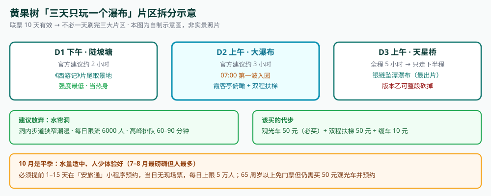
| 项目 | 信息 |
|---|---|
| 位置 | 贵州省安顺市镇宁布依族苗族自治县黄果树镇 |
| 规模 | 高 77.8 米、宽 101 米，亚洲第一大瀑布 |
| 独特性 | 世界上唯一可以从上、下、前、后、左、右六个方位观赏的瀑布 |
| 景区面积 | 163 平方公里，由大瀑布、天星桥、陡坡塘三大区域组成 |
| 文化 | 徐霞客"珠帘钩不卷，匹练挂遥峰"写的就是这里 |
| 联票有效期 | ⭐ 10 天有效 ← 这是本线路成立的前提 |
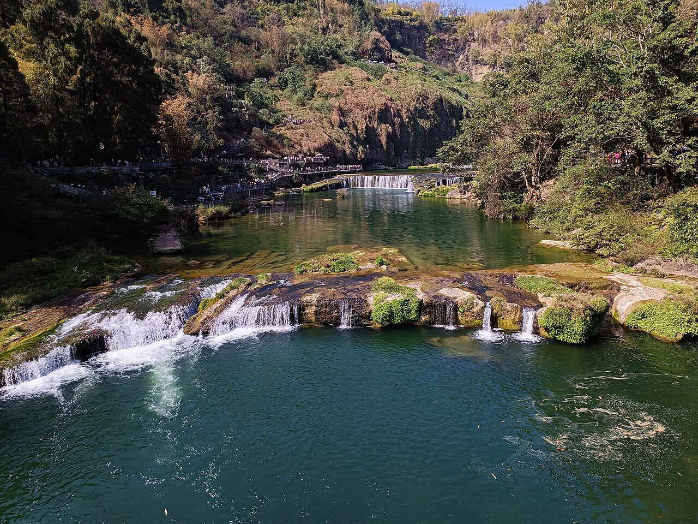
10 月的水量：丰水期 5–10 月，7–8 月最磅礴。10 月属平季：水量适中、人少体验好（攻略原话）。2026 年 5 月 20 日实测最大水流量达 224 立方米/秒。
→ 也就是说，10 月初你看到的不是最大水量，但人也最少，这恰好符合"悠闲"的目标。
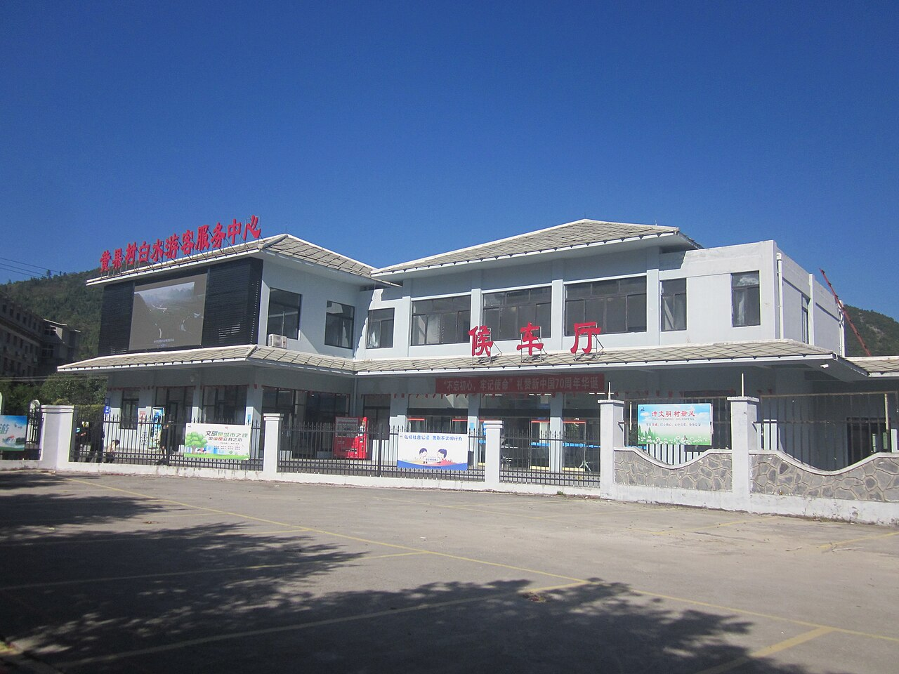
| 项目 | 价格 |
|---|---|
| 门票（旺季 3/1–11/30） | 160 元/人 |
| 观光车（必买） | 50 元/人——三景点间往返约 23 公里 |
| 大瀑布自动扶梯 | 双程 50 元 / 单程 30 元 |
| 缆车 | 10 元 |
| 套餐① | 门票 + 观光车 + 保险 = 220 元/人 |
| 套餐② | 门票 + 观光车 + 双程扶梯 + 保险 = 270 元/人 |
老人与免票（2026 全年有效）：
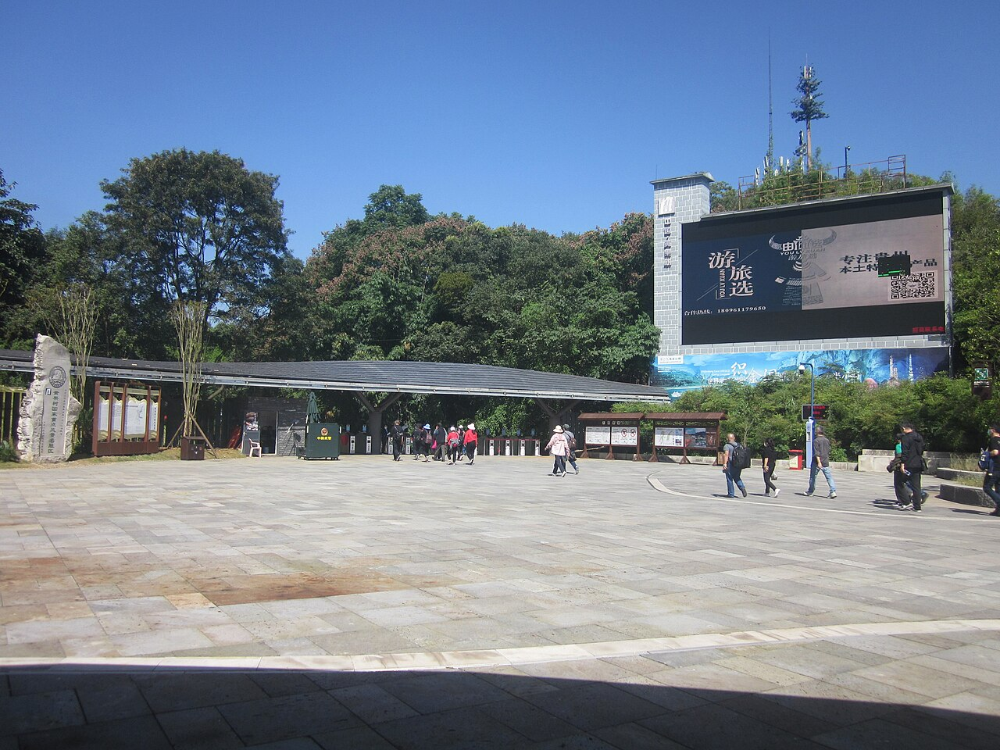
预约（硬性要求）：
开放时间（常规旺季 3/1–11/30）：
水帘洞就在大瀑布后方，穿行其中能感受"飞流直下三千尺"。但对你的需求来说它有三个问题：
| 问题 | 细节 |
|---|---|
| ⚠️ 湿滑（你明确要避免的） | 攻略原话："洞内步道狭窄潮湿、单向通行"；避坑项写"穿防滑运动鞋！洞内路面湿滑" |
| ⚠️ 预约难 | 每日限流 6000 人，实名制分时预约，页面灰色即约满 |
| ⚠️ 排队久 | 高峰排队 60–90 分钟 |
放弃它的好处：湿滑风险直接归零、不用抢 6000 人的名额、省掉 60–90 分钟站队。而大瀑布的"六方位观赏"在水帘洞之外的机位已经能看全。
📷 水帘洞在 Wikimedia Commons 上没有自由许可照片，所以这一节没有配图。反正本方案建议放弃它。
⚠️ 另外提醒：不要在非官方渠道购买"水帘洞代预约"服务，官方从未授权第三方有偿代预约，水帘洞预约本身完全免费。
| 项目 | 信息 |
|---|---|
| 官方建议时长 | 约 3 小时 |
| 看点 | 77.8 米高、101 米宽的亚洲第一瀑；六方位观赏 |
| 代步 | 自动扶梯（双程 50 元 / 单程 30 元）、缆车 10 元 |
| 最佳时段 | 早上 6:30–8:30：游客最少、光线柔和、水雾氛围最好，运气好能遇见瀑布彩虹 |
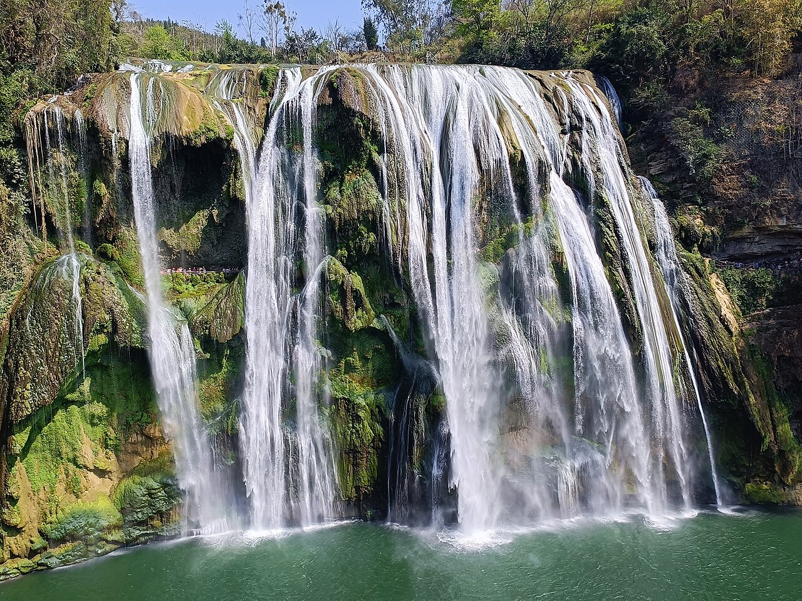
💡 低强度高回报的机位：观光车到陡坡塘站下车后，不进陡坡塘，过马路到霞客亭——这里是上帝视角俯瞰大瀑布全景，几乎没游客，拍照无遮挡。这是全线性价比最高的一个点。
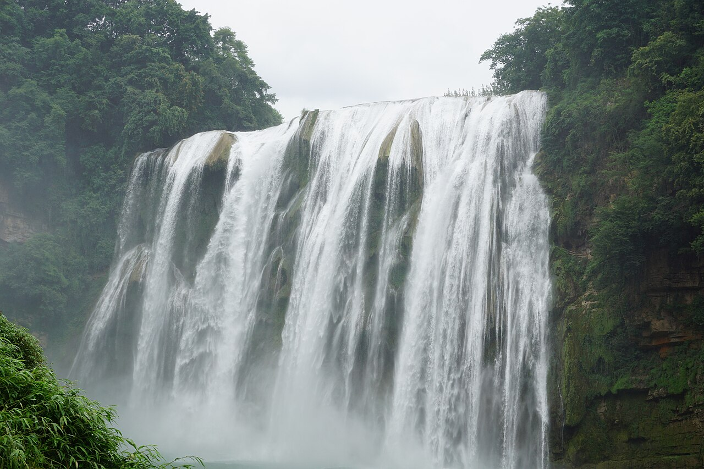
扶梯怎么买：攻略给一般游客的建议是"下行徒步、上行扶梯，能拍到更多角度"。但带老人建议直接买双程 50 元——下行台阶对膝关节的冲击比上行更大。
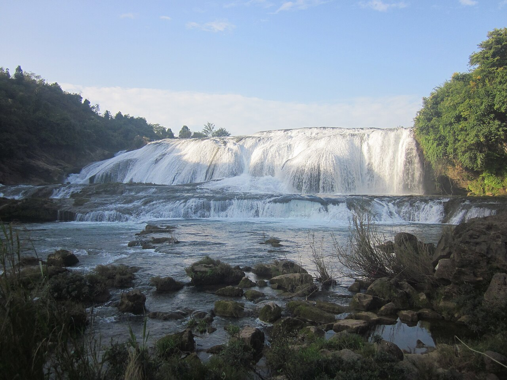
| 项目 | 信息 |
|---|---|
| 官方建议时长 | 约 2 小时 |
| 看点 | 《西游记》片尾取景地；瀑面宽阔平坦、气势浩大 |
| 强度 | 相对轻松，攻略定位为"热身或收尾" |
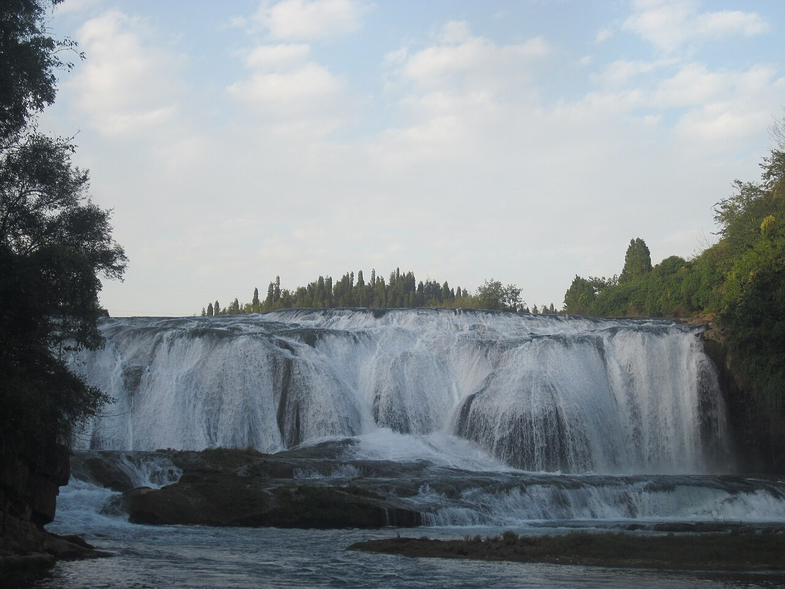
| 项目 | 信息 |
|---|---|
| 官方建议时长 | 全程约 5 小时（分上、下半程） |
| ⚠️ 只走下半程 | 下半程是精华：银链坠潭瀑布（整片景区最出片的地方）+ 天星洞溶洞 |
| 下半程时长 | 约 3–4 小时 |
| 怎么进 | 直接从高老庄入口进入下半程 |
| ⚠️ 施工 | 天星桥索桥 2026 年 4 月 9 日起封闭施工，游览路线改为从干河沟通行 |
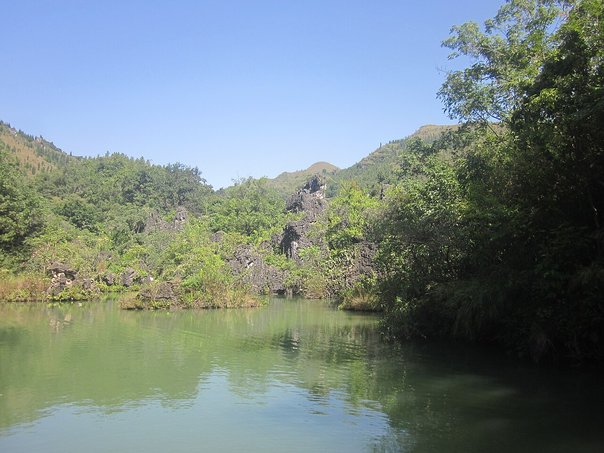
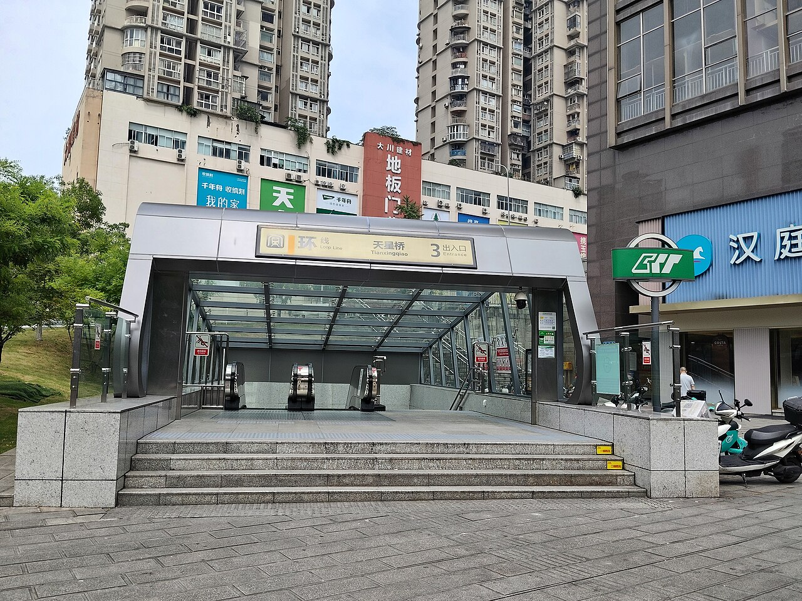
⚠️ 天星洞是溶洞，如果湿滑是硬约束，可以只看银链坠潭瀑布、不进天星洞。
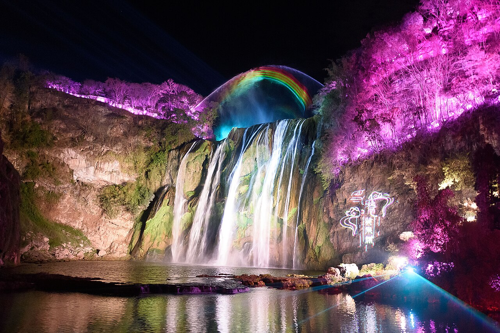
实景演出，灯光下的瀑布夜景。全程坐着看，是"悠闲"版行程的加分项。
D1 · 10/4（安顺阴 18/14℃ · 赶路 + 最轻松的陡坡塘）
| 时间 | 安排 | 细节 |
|---|---|---|
| 08:10 | 宜宾市区 → 宜宾西站 | |
| 08:45 | G2837 宜宾西 → 11:09 安顺西（2h24，二等有 / 一等有） | |
| 11:20 | 安顺西 → 黄果树 | 景区直通车约 40 分钟、票价约 20 元 |
| 12:00 | 抵黄果树，入住"票务中心步行 10 分钟内"的民宿 | 这是本线路最重要的一个选择，见 9.6 |
| 12:30–14:00 | 午餐 + 休息 | 不急着进景区 |
| 14:30–16:30 | 陡坡塘瀑布（约 2 小时，最轻松） | 《西游记》片尾取景地。下午人已经散了 |
| 17:30 | 晚餐 | ⚠️ 景区内餐饮价格偏高，自带水和零食 |
| 可选 | 陡坡塘夜游《再回西游》 | 坐着看 |
D2 · 10/5（多云 19/13℃ · 主力日，上午打核心，下午全休）
| 时间 | 安排 | 细节 |
|---|---|---|
| 06:20 | 起床（住得近的最大价值在这里） | |
| 07:00 | 第一波入园（常规旺季开园 07:00） | ⚠️ 这是全线最重要的一个动作：8:30 前完成核心拍照，完美避开 9 点后的大批旅行团 |
| 07:10 | 坐观光车到陡坡塘站下车 | |
| 07:20–07:50 | 不进陡坡塘，过马路到霞客亭 | 上帝视角俯瞰大瀑布全景，几乎没游客，拍照无遮挡 |
| 08:00–11:00 | 大瀑布（约 3 小时） | 上午水流最充沛、水雾氛围感最好，可能遇见彩虹。六方位绕着看 |
| 11:00 | 上行坐扶梯（带老人买双程 50 元） | |
| 11:30–13:00 | 出园午餐 | |
| 13:00–17:30 | 回民宿休息，什么都不安排 | ⚠️ 这是"悠闲"的核心，不要拿它去加景点 |
| 18:00 | 晚餐 | |
| 可选 | 大瀑布夜游《夜瀑山河绣》 |
D3 · 10/6（多云 22/14℃ · 天星桥下半程 + 返程）
| 时间 | 安排 | 细节 |
|---|---|---|
| 06:30 | 起床、早餐、先退房把行李寄存 | |
| 07:00 | 入园，直接从高老庄入口进天星桥下半程 | ⚠️ 索桥封闭施工，走干河沟通行 |
| 07:10–10:30 | 银链坠潭瀑布（最出片）+ 天星洞（可选，溶洞湿滑可跳过） | 约 3–3.5 小时 |
| 10:45 | 出园 | |
| 11:00–12:00 | 午餐、取行李 | |
| 12:00 | 黄果树 → 贵阳北（包车约 2 小时） | ⚠️ 要提前约车。见 9.7 |
| 14:00 | 抵贵阳北，候车 | 时间富余是刻意的 |
| 16:15 | G2188 贵阳北 → 18:05 宜宾西（商务 3 / 一等 13 / 二等 6） | 备选 G8712 16:52→18:58（一等 16 / 二等有）、C5990 18:57→20:50（一等 14 / 二等 20） |
核心思路：三天只玩大瀑布 + 陡坡塘两个片区，把天星桥的 3–4 小时彻底砍掉，换成休息。
| 日 | 上午 | 下午 | 晚上 |
|---|---|---|---|
| D1 · 10/4 | 赶路（G2837 08:45→11:09 安顺西 → 直通车 → 12:00 到） | 入住 + 午休；14:30–16:30 陡坡塘（最轻松的片区） | 晚餐；可选《再回西游》夜游 |
| D2 · 10/5 | 07:00 第一波入园 → 霞客亭俯瞰全景 → 大瀑布 3 小时 → 上行扶梯 | 完全休息（民宿、喝茶、睡觉） | 可选《夜瀑山河绣》夜游 |
| D3 · 10/6 | 睡到自然醒；或 07:00 再进一次大瀑布看不同光线（联票 10 天有效，随便进） | 11:00 退房，从容午餐，12:00 出发去贵阳北 | 16:15 G2188 回宜宾，18:05 到 |
版本乙的好处：
| 片区 | 评价 | 代表房源 |
|---|---|---|
| ⭐ 票务中心步行 10 分钟内 | 本线路首选。步行可达检票口，省去排队坐观光车的时间，能赶第一波入园、避开人流。D2 要 07:00 入园，住这里才现实 | — |
| 景区周边 3–8 公里 | 性价比之选，大部分民宿提供免费景区接送。慢巡精品民宿（免费接送、餐厅鱼味道好）、睿上民宿（三餐可解决）、兮雲澗民宿（距景区 8 分钟、有游泳池）、木月山居民宿 | 适合家庭、追求性价比 |
| 蛮寨村半山腰 | 景观品质之选，距景区约 20 分钟车程，每间客房直面喀斯特群山与坝陵河大桥，有悬崖无边泳池、顶层观景露台 | 匠廬·閱山等 |
黄果树周边有 100 余家民宿。⚠️ 国庆要立刻订，尤其是票务中心步行范围内的。
| 段 | 方式 | 耗时 |
|---|---|---|
| 去程 宜宾西 → 安顺西 | 高铁，10/4 有 9 班、二等/一等都有票：G2837 08:45→11:09 | 2h24–3h02 |
| 安顺西 → 黄果树 | 景区直通车，约 40 分钟、约 20 元 | 40 分钟 |
| 返程 黄果树 → 贵阳北 | 包车约 2 小时（黄果树距贵阳约 130 公里） | 2 小时 |
| 贵阳北 → 宜宾西 | 高铁，10/6 余量宽松：G2188 16:15、G8712 16:52、C5990 18:57 等 | 1h50–2h06 |
✅ 返程只买一张高铁票。如果走"黄果树→安顺西→贵阳北→宜宾西"反而要买两段票，而安顺西→贵阳北 10/6 中午余量很紧。
自驾：导航"黄果树景区第一/二/三票务中心"，周边有大型停车场。
预约（最重要）
时段
装备
代步，该花的钱别省
安全
住宿
| 项目 | 全价 | 65 岁以上老人 |
|---|---|---|
| 门票（旺季） | 160 元 | 0 元 |
| 观光车（必买） | 50 元 | 50 元 |
| 双程扶梯 | 50 元 | 50 元 |
| 保险（套餐内含） | — | — |
| 安顺西→黄果树直通车 | 约 20 元 | 约 20 元 |
| 黄果树→贵阳北包车 | 需议价 | 需议价 |
| 夜游（可选） | 待确认 | 待确认 |
| 合计（不含包车/高铁/住宿） | 约 280 元 | 约 120 元 |
直接买套餐②（门票 + 观光车 + 双程扶梯 + 保险 = 270 元）最省事；老人则单买观光车 50 元 + 扶梯 50 元。
| 情况 | 怎么办 |
|---|---|
| ⚠️ "安旅通"预约不到 10/4–10/6 的名额 | 这条线直接不成立。所以订这条线的第一件事就是去小程序试预约，先确认名额再订房订票。约不到就改线路 L（紫云格凸河）——同在安顺、天气一样好，而且不需要预约 |
| 票务中心附近民宿订不到 | 退到"景区周边 3–8 公里"片区，大部分有免费接送；但 D2 的 07:00 入园要和老板确认能不能送早班 |
| 10/5 临时下雨 | 瀑布本身不怕雨（反而水量更大），但水雾 + 雨会让台阶更滑。此时砍掉天星桥、只在大瀑布和霞客亭活动，并把更多时间放在夜游和民宿休息 |
| 老人走不动大瀑布全程 | 只走霞客亭 + 扶梯上下的观瀑平台。霞客亭是"上帝视角俯瞰全景、几乎没游客"，单这一个点就能看到瀑布全貌 |
| 三天觉得单调 | 联票 10 天有效，可以每天在不同时段重复进大瀑布——早晨水雾、正午光线、傍晚夜游是三种完全不同的体验。实在想换，黄果树距龙宫约 30 分钟（但龙宫是水溶洞、地面潮湿；而且那就不是"只为黄果树"了） |
| 返程公路堵车 | 贵阳北→宜宾西 10/6 傍晚到深夜多班有票（G8712 16:52、C5990 18:57、C5972 21:41、G8736 21:58），容错空间大 |
| L 紫云格凸河 | M 黄果树专线 | |
|---|---|---|
| 核心 | 世界最高古河道 + 苗族蜘蛛人 | 亚洲第一大瀑布 |
| 自然震撼 | 高 | 最高 |
| 文化深度 | 高 | 低 |
| 湿滑风险 | 中（雨后石阶） | ⚠️ 中–高（水雾 + 台阶，但可避开溶洞） |
| 步行量 | 中–高（可缩到 2 公里） | 中（分三天后可控） |
| 预约难度 | 低 | ⚠️ 高（必须提前约，当日无票） |
| 门票透明度 | ⚠️ 低 | ✅ 最高（160+50+50，老人免门票） |
| 返程 | ✅ 一张票 | ✅ 一张票 |
| 景点数 | 1 个（格凸河） | 1 个（黄果树） |
怎么选：
一句话定位：景色是全部线路里最震撼的，而且万峰林的观光车玩法本身是全文最适合老人的游览形态。天气也好（10/4 小雨转多云 21/16℃、10/5–6 多云 21–24/14–15℃，不冷）。代价是单程 4 小时 + 返程必须贵阳北中转，折腾量超标。
它同时具备最好的"景区内老人适配"和最差的"路途老人适配"：
| 评价 | |
|---|---|
| 景区内 | ★★★★★ 万峰林半山观光车环形单线循环，每站下车走几十米就到下一上车点；马岭河有"懒人省力版"路线全程不爬坡；景区攻略都明确写"适合带老人小孩" |
| 路途 | ★★ 单程 4h03、返程必须中转、10/6 要用半天赶路 |
结论：老人体力很好、且不介意路上时间，这条线的景色回报最高。否则选 B 或 F。
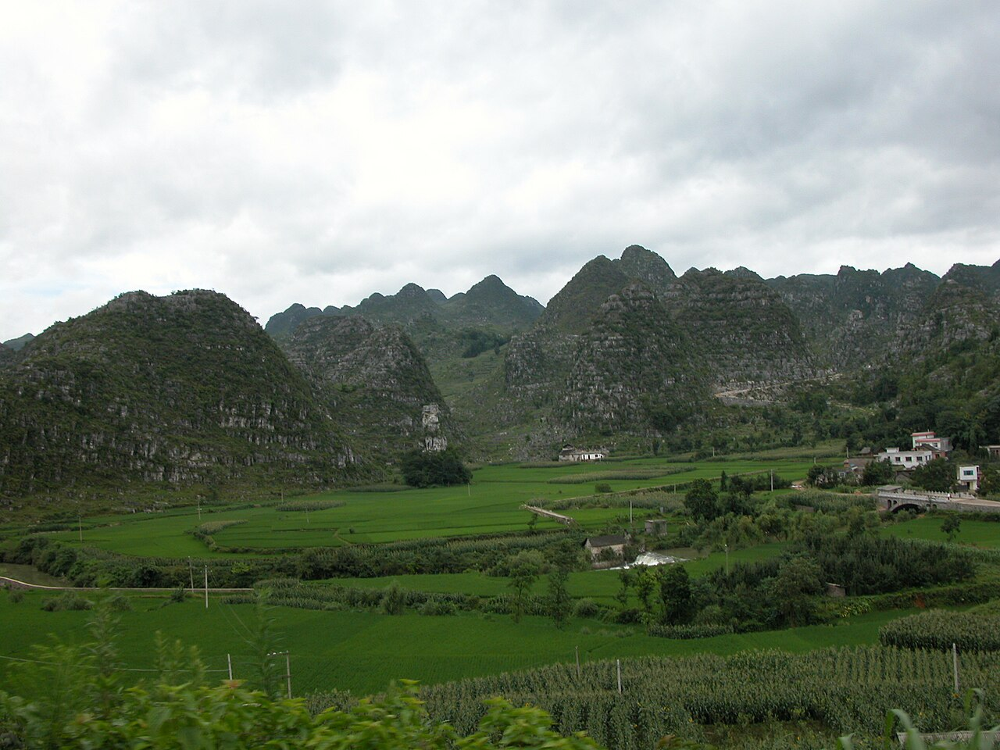
| 项目 | 信息 |
|---|---|
| 位置 | 贵州省黔西南布依族苗族自治州兴义市东南部 |
| 级别 | 国家 5A 级旅游景区 |
| 评价 | 徐霞客："天下山峰何其多，唯有此处峰成林"；《中国国家地理》"中国最美五大峰林"之一 |
| 规模 | 两万多座锥状喀斯特峰林 |
| 门票 | 旺季（3/1–11/30）70 元；淡季 60 元 |
| 观光车 | 50 元（需另购） |
| 套票 | 旺季 120 元、淡季 110 元（比单买便宜） |
| 老人优惠 | 65 周岁以上凭有效身份证明免门票（观光车 50 元仍需买） |
| 预约 | ⚠️ 2026-07-20 起实行分时段实名预约，所有入园游客（含免票人群）均需实名预约，一人一证 |
| 预约时段 | 8:00–10:00 / 10:00–12:00 / 12:00–14:00 / 14:00–16:00 / 16:00–18:00 |
| 预约平台 | 万峰林景区微信小程序、一码游贵州、小桔子 Life、抖音、携程、美团、去哪儿 |
| 开放时间 | 旺季 8:00–18:00；淡季 8:30–17:30 |
| 入园高峰 | 10:00–11:30、13:30–15:00 |
| 建议时长 | 3–5 小时（观光车环线 2–3 小时 + 村寨漫游） |
| 年均温 | 16–18℃ |
| 景区热线 | 0859-3342299 |
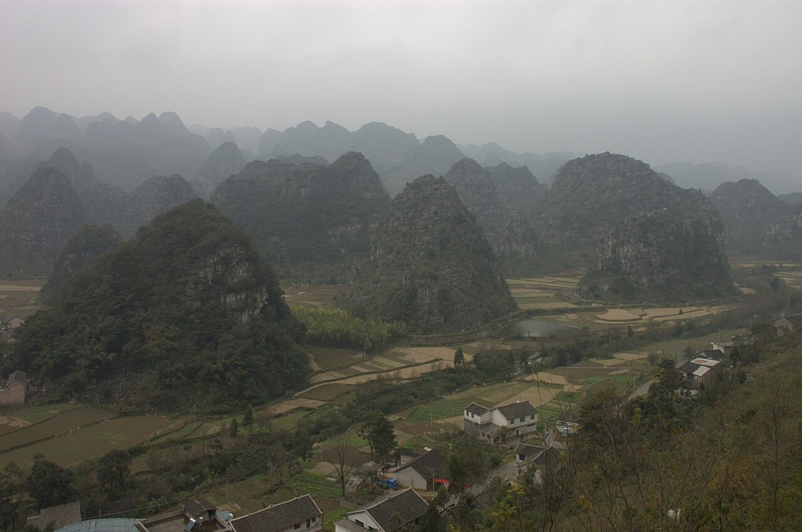
三种玩法对比：
| 玩法 | 怎么玩 | 时长 | 适不适合老人 |
|---|---|---|---|
| ① 观光车俯瞰全景 | 游客中心乘车，沿半山"观峰道"打卡各观景台。环形单线循环，每站可下车拍照，走几十米即到下一上车点 | 2–3 小时 | ✅ ★★★★★。景区原话"适合带老人小孩的家庭、时间紧张的游客，省力且视角独一无二" |
| ② 田园骑行/徒步 | 观光车终点在山脚纳灰村，下车租电动车或自行车穿行上/中/下纳灰村。电动车 30–50 元/天 | 2–4 小时 | ⚠️ 老人可只坐电动车不骑，或只走纳灰河生态长廊（步道平缓，能推婴儿车） |
| ③ 凌峰步道徒步登顶 | 游客中心（东门）→步道入口→阅军台→好汉坡→1314 观景台→万峰成林→凌云峰→乾坤台→锦绣田园→众星捧月→峰潮集 | 半天+ | ❌ 全程登山，带老人绝对不选。旺季开放至 16:30 |
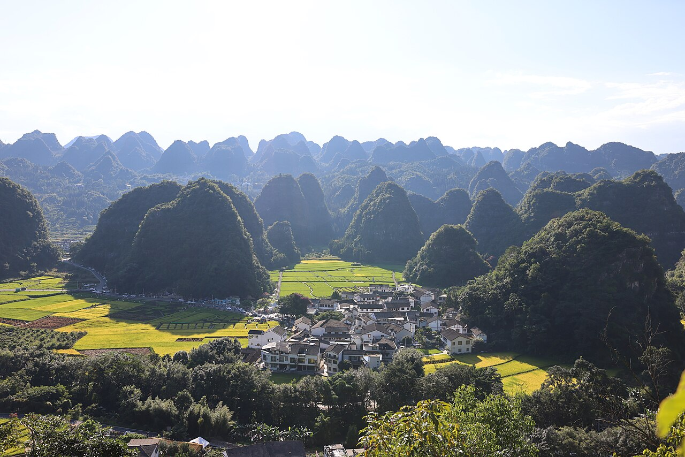
观光车沿线站点（按顺序）：
| 站点 | 看点 |
|---|---|
| 将军峰 | 万峰林标志性孤峰，独立挺拔，360° 拍摄无死角 |
| 众星捧月 | 中心孤峰被群峰环绕，远眺布依村寨 |
| 锦绣田园 | 俯瞰万峰林全景的绝佳位置 |
| 八卦田 | 天然漏斗状农田形成八卦图案，航拍效果震撼 |
| 六六大顺峰 | 六座山峰依次排列 |
| 福字田 | 秋季田里的巨幅"福"字 |
最佳拍摄时段：清晨 6:00–7:00 拍晨雾云海；傍晚 17:30–18:30 拍柔和光影和剪影。
⚠️ 10 月初的稻田状态有不确定性：攻略写"秋季（9–10 月）稻田金黄翻涌，9 月中旬陆续收割，限时美景"。也就是说 10 月初可能已部分收完。如果你是专为金黄稻田去的，这是风险点。
省钱：只逛村寨（上纳灰、中纳灰、下纳灰、万福村）和田园区域完全免费，只有坐观光车上山才需买票。通过"一码游贵州"小程序购票核验后，5 天内再买省内其他国有 A 级景区门票可享五折。租车别在景区官方租，村里随处可租、能讲价。
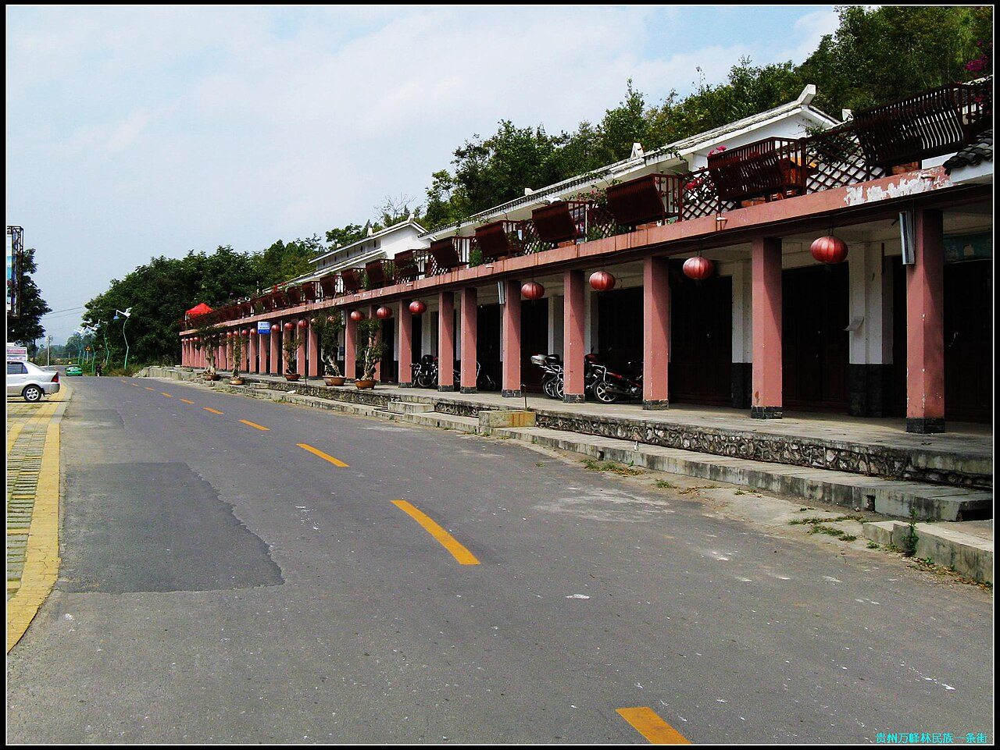
亲子/轻体验项目：稻田小火车 20 元/次；稻田捞鱼约 30 元/人（不限时，提供草帽和连体防水衣裤，抓完现做现吃）；八音堂体验蓝染。
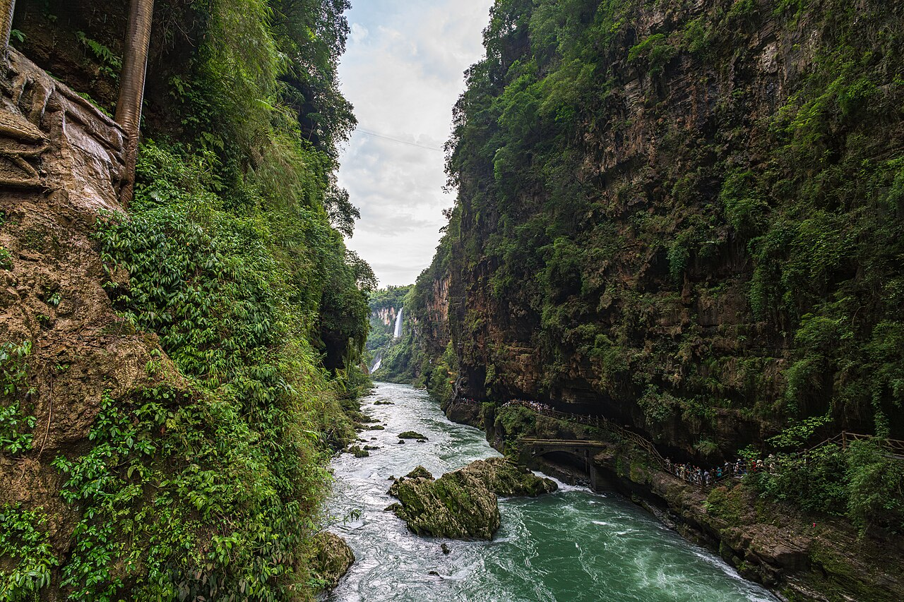
| 项目 | 信息 |
|---|---|
| 位置 | 兴义市，距市中心仅 4–8 公里，距万峰林约 20 分钟车程 |
| 级别 | 国家 AAAA 级旅游景区 |
| 评价 | 《国家地理》称"地球最美的伤疤" |
| 规模 | 峡谷全长约 15 公里；核心段"天星画廊"1.7 公里内聚集 60 多条瀑布，"72 瀑聚一峡" |
| 门票 | 旺季（3/1–11/30）70 元；淡季 60 元 |
| 观光电梯 | 单程 30 元、往返 40 元 |
| 老人优惠 | 65 周岁以上免门票；80 周岁以上老人、盲人、重度残疾人：本人及一位陪护人员免门票；1.4 米以下儿童门票+电梯全免 |
| 预约 | ⚠️ 2026-07-11 起严格限流，全面实名预约，每日门票限额发售。渠道：微信"马岭河峡谷"官方小程序、Trip.com 等 |
| 开放时间 | 旺季 8:00–17:30，16:00 停止入园（旺季 18:30 开始清场） |
| 建议时长 | 2–3 小时 |
| 咨询电话 | 0859-3646118 |
⚠️⚠️ 这个景区最大的坑是入口选错。两个入口相距约 800 米，但游览体验天差地别：
| 路线 | 走法 | 时长 | 适合谁 |
|---|---|---|---|
| ① 懒人省力版 | 小青山入口进 → 小青山出口出。坐观光电梯下谷（单程 30 元）→ 核心瀑布群 → 海狮桥 → 电梯返回 | 约 2 小时 | ✅ 带娃/老人首选。全程不爬坡，所有核心景点都能看到 |
| ② 精华暴走版 | 打柴窝入口进 → 小青山出口出。95% 都是下坡，不走回头路 | 2.5–3 小时 | 体力党 |
| ❌ 绝对不要 | 打柴窝进、打柴窝出 | — | 攻略原话"最后那段楼梯爬到怀疑人生" |
💰 省钱细节：走懒人版只买单程下行电梯 30 元，不要买往返 40 元——因为出口就在入口，往返票用不上。
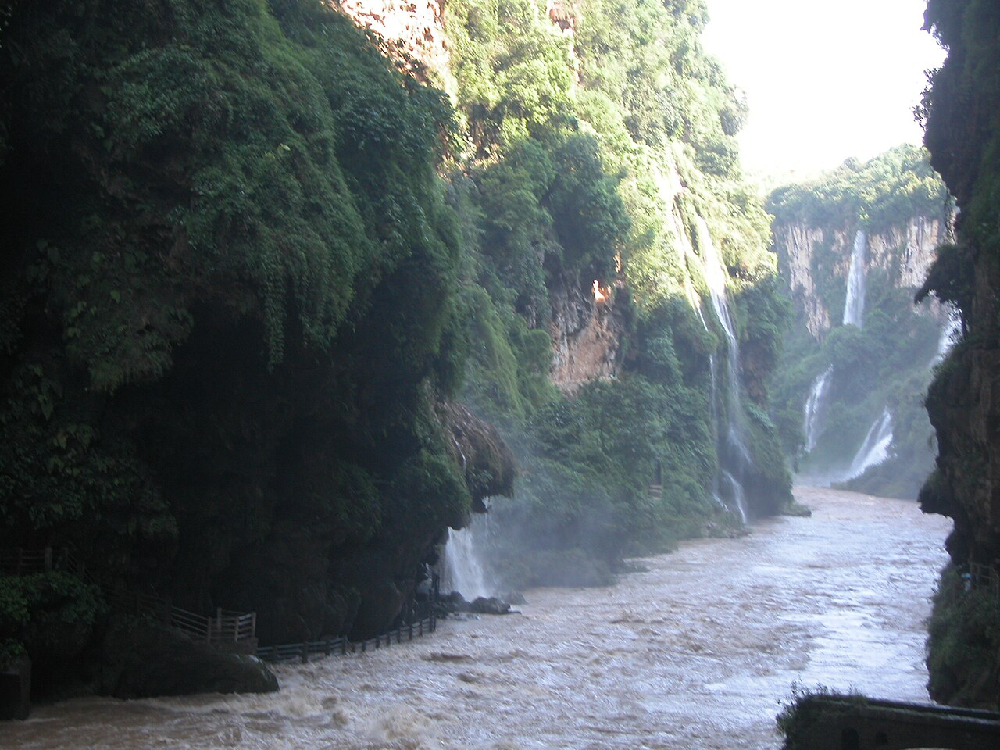
峡谷内景点（按游览顺序）：
| 景点 | 看点 |
|---|---|
| 万马奔腾瀑布群 | 峡谷绝对 C 位，落差 176 米，丰水期几十条瀑布同时从崖顶倾泻，水雾裹着凉气扑面，体感直降五六度 |
| 黄龙瀑布 | 景区内水流量最大的单条瀑布，高 76 米，雨季最宽可达 23 米 |
| 海狮厅 | 喀斯特溶洞，凉到起鸡皮疙瘩 |
| 水帘洞 / 穿瀑栈道 | 栈道直接从瀑布背后穿过 |
| 钙华壁挂 | 200 万平方米碳酸钙壁挂，全国峡谷规模第一，颜色从奶白渐变到蜜黄再到苔绿 |
| 飞鱼峡 | 峡谷最窄处，只能一人侧身通过，脚下就是奔腾河水 |
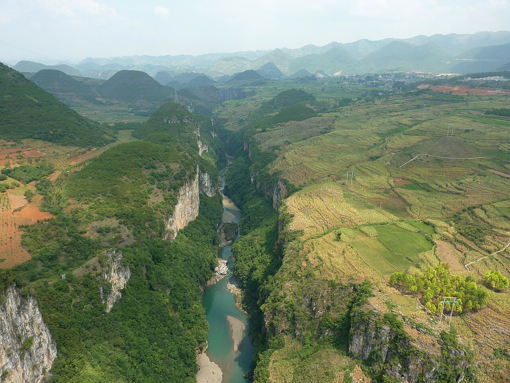
拍照：上午 10 点前光线斜射瀑布容易出彩虹；下午 3–5 点阳光斜照峡谷。神级机位：万马奔腾观景台（176 米落差正面）、峡谷悬空吊桥、打柴窝旧桥（俯拍全景）。免费彩蛋：出景区后导航"马岭河峡谷大桥"，桥上俯瞰整个峡谷地缝。
⚠️ 漂流（"中国第一漂"，全程 13 公里、落差 200 米，198–238 元/人，5–10 月开放）：1.2 米以下儿童、65 岁以上老人、孕妇、高血压人群禁止漂流。带老人直接跳过这一项。
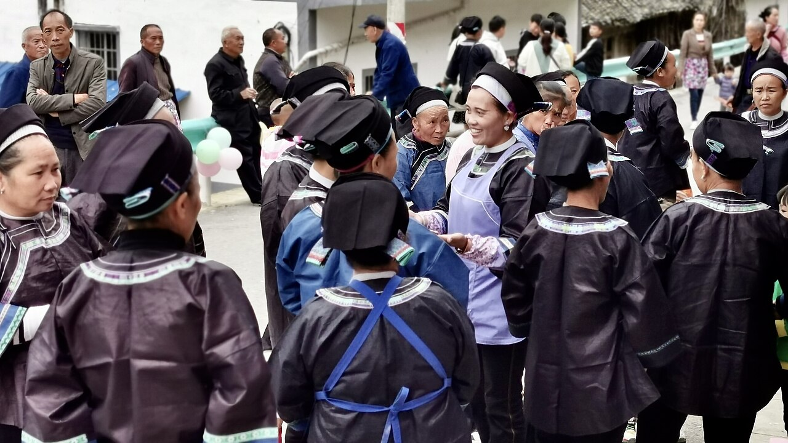
| 项目 | 信息 |
|---|---|
| 位置 | 兴义市丰都街道赵家渡村，距市区十余公里，紧邻东峰林，属万峰林核心区域 |
| 级别 | 国家 3A 级，占地 2100 亩 |
| 建筑 | 600 余栋布依族吊脚楼、石板房、鹅卵石房，环浪哨湖分布 |
| 开园 | 2024 年 2 月试运营，已累计接待 200 余万人次 |
| 门票 | 成人 99 元/人（2026/1/1 起） |
| 老人优惠 | 60–69 周岁半票 49 元；70 周岁以上免票（凭有效证件）；80 周岁以上可享 1 名陪护免票 |
| 开放时间 | 08:00–次日 00:00，23:00 停止入园 |
| 最佳入园时间 | 下午 4 点——可同时看白天山水古寨和夜晚灯光，性价比最高 |
| 建议时长 | 2–3 小时 |
| 预约 | 目前无需预约，可直接到游客中心购票 |
价值：白天是喀斯特峰林间的水墨古寨，夜晚万盏明灯点亮后被称"现实版千与千寻"。专业级灯光让建筑群与山体层次分明。
非遗表演（时间以当日公告为准）：
官方推荐动线：16:00 入园 → 非遗古街体验蜡染/造纸 → 17:20 浪哨湖、月亮桥拍倒影 → 18:00 半山稻田栈道 → 18:40 美食街晚餐 → 19:00 登九重塔俯瞰全景 → 19:30 蓝调时刻拍夜景最佳 → 20:00 打铁花 + 篝火晚会 → 21:30 环湖夜游返程。
⚠️ 诚实提醒：这是 2024 年新建的文旅综合体，不是传统古村寨；部分区域仍在建设；商业化程度较高，以商铺、餐饮和表演为主；白天景色相对平淡，夜景才是核心卖点。另外园区步道台阶较多。
| 时间 | 安排 | 细节 |
|---|---|---|
| 06:40 | 起床 | |
| 07:15 | 宜宾市区 → 宜宾西站 | |
| 07:56 | G8761 宜宾西 → 11:59 兴义南（4h03，二等有 / 一等有） | 这是唯一合适的班次。另两班 G8555 13:07→17:13、G9559 14:11→18:59 到得太晚 |
| 11:59 | 抵兴义南站 | |
| 12:20 | 兴义南站 → 万峰林 | 景区直通车 1 号线：13 公里 / 约 20 分钟 / 10 元。高铁到站后延后 20 分钟发车；出站口有咨询服务点，可扫码或用小程序"好行网"购票 |
| 12:50 | 下纳灰村入住 | |
| 13:10 | 午餐：将军桥蛋炒饭（万峰林最出名的小吃，人均 15–20 元） | |
| 14:30–17:30 | 纳灰河生态长廊慢走 + 下纳灰村逛古榕树、石板房 | 步道平缓、能推婴儿车；这段完全免费、不需门票 |
| 18:30 | 晚餐：布依八大碗 / 酸笋牛肉 / 兴义羊肉粉 | |
| 20:00 | 早睡 | 第二天要早起 |
排法甲：万峰林 + 马岭河（景色最饱满，推荐）
| 时间 | 安排 | 细节 |
|---|---|---|
| 06:30 | 起床 | |
| 06:30–07:30 | 拍晨雾云海 | 清晨常有晨雾缭绕峰林，这是万峰林最值的一刻 |
| 07:30 | 早餐 | |
| 08:00 | 游客中心乘观光车观峰道（预约 8:00–10:00 时段） | 赶早不赶晚：7–9 点人少雾美，10 点后人流密集 |
| 08:00–10:30 | 将军峰 → 众星捧月 → 锦绣田园 → 八卦田 → 六六大顺峰 → 福字田 | 环形单线循环，每站下车走几十米即到下一上车点。全程约 2 小时 |
| 11:00 | 车去马岭河峡谷（约 20 分钟） | ⚠️ 导航 "小青山入口"（也叫一号门），不要导打柴窝 |
| 11:30 | 入园（今晚已在小程序预约）→ 买单程下行电梯 30 元 | |
| 11:40–13:40 | 懒人省力版：电梯下谷 → 万马奔腾瀑布群 → 黄龙瀑布 → 海狮厅 → 水帘洞穿瀑栈道 → 海狮桥 → 电梯返回 | 全程不爬坡，约 2 小时 |
| 14:00 | 午餐（往市区吃更地道，景区门口餐馆贵且一般）：干锅牛肉 / 兴义羊肉粉 | |
| 15:30 | 出景区后导航"马岭河峡谷大桥"，桥上俯瞰峡谷地缝（免费） | 5 分钟的事，但视角震撼 |
| 16:00–17:30 | 回万峰林民宿休息 | |
| 17:30–18:30 | 万峰林最佳拍摄时段：柔和光影和峰林剪影 | |
| 19:00 | 晚餐，早睡 |
排法乙：万峰林 + 峰林布依夜景（文化与夜景更饱满）
| 时间 | 安排 |
|---|---|
| 06:30–07:30 | 拍晨雾云海 |
| 08:00–10:30 | 万峰林观光车观峰道（同上） |
| 11:00–13:00 | 租电动车（村里租、30–50 元/天、能讲价）穿行上/中/下纳灰村，看古榕树、石板房；带孩子可玩稻田小火车 20 元、稻田捞鱼约 30 元 |
| 13:00–15:30 | 午餐 + 民宿午休 |
| 16:00 | 车去峰林布依（约 15–20 分钟）下午 4 点入园，这是官方推荐的黄金时间 |
| 16:00–21:30 | 按官方动线走：非遗古街 → 17:20 浪哨湖月亮桥 → 18:00 半山稻田栈道 → 18:40 美食街晚餐（水城羊肉粉小碗 12 元 / 大碗 14 元、油煎饼 6 元、布依灰粽）→ 19:00 九重塔 → 19:30 蓝调时刻拍夜景 → 19:40 火壶（月亮桥广场）→ 20:00 打铁花（浪哨桥，提前半小时占位） + 篝火晚会 → 21:30 环湖夜游 |
| 22:00 | 返民宿 |
怎么选：想看自然奇观选甲（马岭河 176 米瀑布群）；想看民族文化 + 夜景选乙（打铁花 + 八音坐唱）。带老人建议选甲——峰林布依"园区步道台阶较多"，而且 22:00 才回住处太晚。
| 时间 | 安排 | 车次 |
|---|---|---|
| 06:00–07:00 | 再拍一次晨雾云海（10/6 天气最好） | 这是这条线最后的"回本"机会 |
| 08:00–09:00 | 早餐、退房 | |
| 09:30 | 直通车 / 打车回兴义南站（约 20–30 分钟） | |
| 10:44 | G5350 兴义南 → 12:36 贵阳北（1h52，二等有 / 一等 1） | |
| 12:40–15:00 | 贵阳北换乘 + 午饭 | ⚠️ 贵阳北是大站，换乘至少留 1 小时，带老人留 1.5 小时 |
| 15:09 | G918 贵阳北 → 16:52 宜宾西（1h43，二等有 / 一等有） | 备选 G8712 16:52→18:58（二等有 / 一等 16） |
| 片区 | 价位 | 特点 | 代表房源 |
|---|---|---|---|
| 上纳灰村 | 200–800 元 | 核心观景、视野最佳，推窗见峰林，距景区入口近 | 上草居·中医药美学空间、伴河居·轻奢观景民宿 |
| 下纳灰村 | 150–300 元 | 性价比之王、烟火气浓，吃饭赶集方便、免费停车。⚠️ 周一有赶集日，可体验风土 | 远峰田畔民宿、溪禾 Creek·星月泳池·望峰隐宿 |
| 中纳灰村 / 万福村 | — | 半山静谧，适合避世 | — |
| 峡谷附近（6 公里内） | 200–400 元 | 玩完马岭河直接回去休息 | 雲谷智能民宿、隐畔山舍、尚悠民宿、静兮民宿 |
| 兴义市区 | 150–300 元 | 桔山广场、梦乐城商圈，美食多、靠近高铁站 | — |
| 峰林布依景区内 | — | 住景区内民宿通常可免景区门票 | 峰林雅居、谦谷木舍、揽翠微（含双早+门票+观光车+民族服饰体验） |
万峰林已形成贵州最大的民宿集群，306 家以上。⚠️ 旺季和热门民宿建议提前 15 天预订——现在距出发不到一天，这是这条线最大的现实障碍。
万峰林：将军桥蛋炒饭（蛋炒饭一条街，人均 15–20 元，万峰林最出名）、酸笋牛肉（酸辣，类似螺蛳粉风味）、布依八大碗（布依族传统宴席）、兴义羊肉粉（本地人强推，比牛肉粉更地道）、鸡肉汤圆（咸鲜）。
马岭河出来：干锅牛肉、刷把头（烧卖类似物，蘸辣椒水）、布依酸汤鱼（景区出口有家 48 元一条鱼）。
峰林布依景区内：水城羊肉粉 12/14 元、油煎饼 6 元、布依灰粽、盒子粑、长桌宴。景区内物价与市区街边店相差不大。
预约（这条线最容易翻车的地方）
入口与路线（省下 1000 级台阶）
装备（马岭河三件套）
安全
人流与时段
停车
| 项目 | 全价 | 65 岁以上老人 |
|---|---|---|
| 万峰林套票（门票 70 + 观光车 50） | 120 元 | 50 元（免门票，观光车仍买） |
| 马岭河门票 | 70 元 | 0 元 |
| 马岭河单程下行电梯 | 30 元 | 30 元 |
| 兴义南站↔万峰林直通车往返 | 20 元 | 20 元 |
| 万峰林↔马岭河打车 | 视情况 | — |
| 电动车租赁（可选） | 30–50 元/天 | — |
| 峰林布依（可选） | 99 元 | 49 元（60–69 岁）/ 0 元（70 岁以上） |
| 合计（走排法甲，不含峰林布依） | 约 240 元 | 约 100 元 |
额外省钱：用"一码游贵州"小程序购票核验后，5 天内再买省内其他国有 A 级景区门票可享五折；省外游客凭电影票根可享省内国有 A 级景区免门票一次 + 500 元消费券；高铁票根也有相应优惠（待现场确认）。
| 情况 | 怎么办 |
|---|---|
| 返程两段票没同时买到 | 这条线直接不成立，立刻切换到线路 L 或 M（返程都只需一张票）。所以订这条线的第一件事就是把返程两段票买好 |
| 万峰林预约时段抢不到 8:00–10:00 | 退而求其次抢 10:00–12:00，但要接受人流高峰；或 D3 早上 6–7 点先免费逛村寨拍晨雾，观光车改到 D2 下午 14:00–16:00 时段 |
| 马岭河当日限额售完 | 改排法乙（峰林布依夜景），或 D2 全天留在万峰林深度逛村寨（免费） |
| 10/4 雨比预报大 | D1 本来就只是赶路 + 纳灰河平缓步道，影响不大；雨太大就直接民宿休息 |
| 老人中途体力不支 | 万峰林观光车可以随时在任一站上车返回游客中心；马岭河懒人版出口就是入口，坐电梯即可上来 |
| 贵阳北换乘来不及 | 贵阳北→宜宾西 10/6 还有 C5990 18:57→20:50（二等 18）、C5972 21:41→23:34（有票）、G8736 21:58→00:06（有票），但到宜宾就很晚了，带老人不要赌这个 |
先承认一个错误：上一版我把西昌归到"太远"直接排除了，这个判断是错的，而且我当时没有实际查过车次。新成昆铁路复线 2022 年底通车后，峨眉山→西昌西只要 2 小时 04 分–2 小时 36 分。按"民族风情丰富"这一条，西昌本来应该排第一。
但它这个窗口去不了，原因不是远，是 10/6 返程 38 趟车全部无坐席。下面把它完整写出来，并给出改期方案——因为只要挪两天，这条线就成立。
| 需求 | 西昌的表现 |
|---|---|
| 民族风情 | ★★★★★ 凉山彝族自治州是中国最大的彝族聚居区。彝族服饰（察尔瓦、百褶裙、银饰）、漆器、毕摩文化、火把节都在这里，而且是成体系地存在于日常生活中，不是景区化的表演 |
| 特别的自然景色 | ★★★★ 邛海是四川第二大淡水湖；安宁河谷是中国西部第二大河谷平原 |
| 步行量小 | ★★★★ 邛海环湖湿地全程平路，可骑行、可电瓶车；建昌古城平路；泸山有上山交通 |
| 不赶、休养 | ★★★★★ 西昌号称"月城""一年 320 天晴天"，年均温约 17℃，是典型的休闲型目的地而非打卡型 |
| 高铁可达 | ★★★ 可达但需中转 |
公开攻略把西昌的核心体验概括为四层，按这个结构排行程才顺：
| 层 | 内容 | 建议预留时长 |
|---|---|---|
| 第一层：邛海 | 湖景、湿地、骑行、日落 | 3–5 小时 |
| 第二层：泸山 | 城市制高点、寺庙林木、俯瞰邛海的视角 | 2–3 小时 |
| 第三层：建昌古城 | 街巷、城门、老城生活、夜间氛围 | 2–4 小时 |
| 第四层：市区美食夜市 | 西昌烧烤、火盆烧烤、米粉、小吃 | 1.5–2.5 小时 |
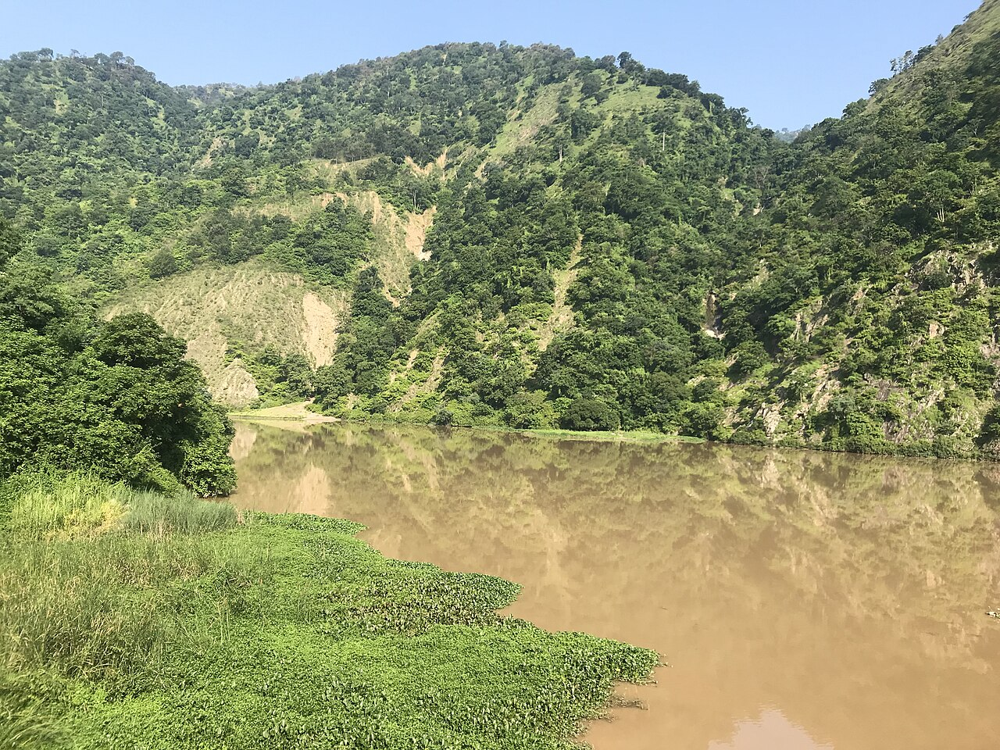
周边延伸（需单独安排半天到一天，三天及以上或自驾才考虑）：螺髻山、黄联土林、西昌卫星发射中心、温泉。
⚠️ 票价与预约我不编。我查到的攻略明确写"邛海、泸山、建昌古城及周边景点的具体收费、开放范围、交通方式和预约要求可能调整，务必以景区、文旅或官方预约渠道为准"，并没有给出具体数字。泸山缆车、邛海电瓶车、螺髻山索道、卫星发射中心参观预约的价格和方式，请出发前通过官方渠道确认。
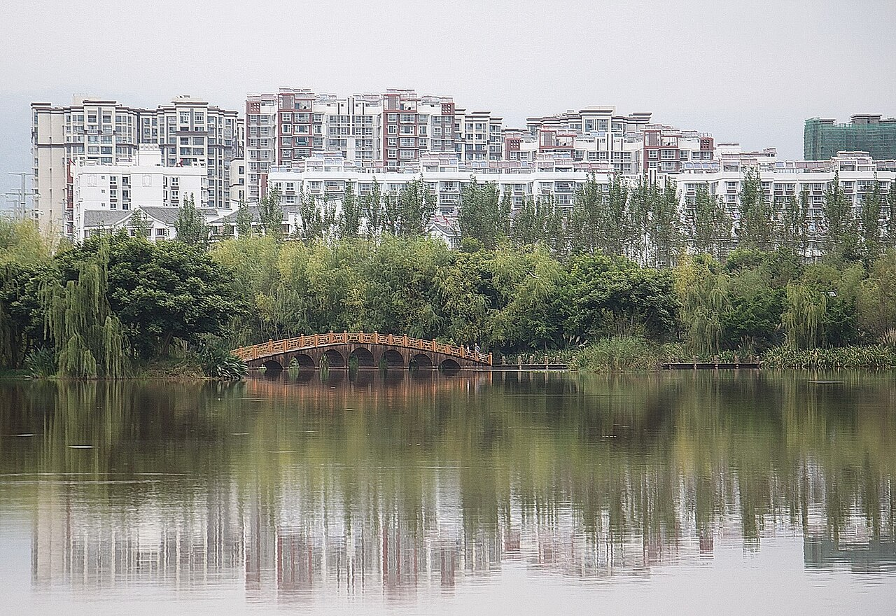
价值：四川第二大淡水湖，环湖湿地公园群。它是"行程的底盘"——适合安排半天到一天。
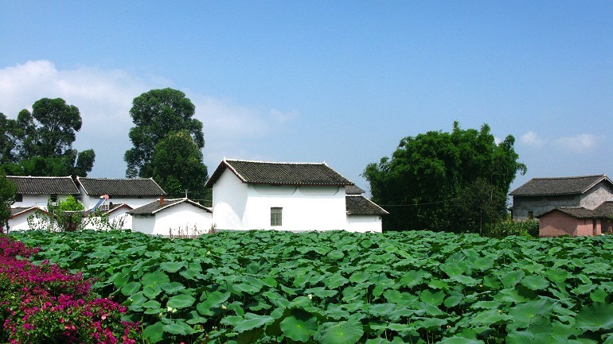
关键认知：⚠️ 不要把邛海当成一个"点"。这是攻略列出的第一大常见错误——到了才发现湖岸线很长、停留点很多、走起来非常耗时间。
正确玩法：选一到两个适合停留的点（湿地、公园、湖边栈道、观景台、日落位置），而不是绕湖一整圈。晴天把时间留给湖边步道和湿地；阴天改成轻松散步、喝茶或找湖边视野。
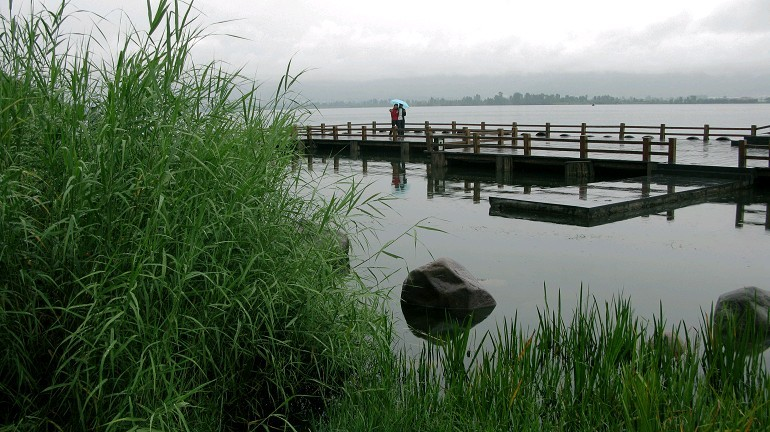
光线：邛海的光线变化非常明显，同一位置上午、下午、傍晚氛围差异很大。日落值得预留完整傍晚，但要先确定方向和停留点，再判断从午后位置走过去要多久、是否需要打车。
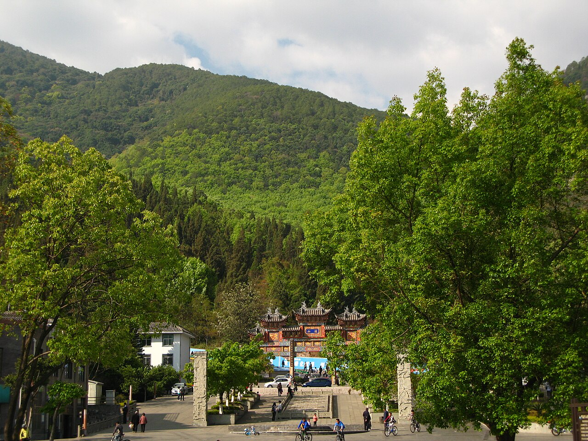
价值：城市制高点，看林木、寺庙、山路，以及俯瞰邛海的角度。
关键认知：必须排在上午。这是攻略列出的第二大错误——把泸山排到下午，天气热、体力下降，上山体验变差。而且泸山与邛海相邻，上午登泸山、下午把时间留给湖边，比"先逛古城再折回湖边"省体力得多。
⚠️ 泸山的寺庙需要一点讲解才看得懂，否则容易变成"看过但没记住"。
📷 建昌古城在 Wikimedia Commons 上没有自由许可照片，这一节没有配图。
价值：唐宋以来"川滇锁钥"的卫城，看城门、主街、支巷和生活街区。
关键认知：适合傍晚以后进入。这是攻略列出的第三大错误——把古城排在白天匆匆打卡，错过傍晚和夜间的街区氛围。白天可以看城墙和街巷，晚上适合串联小吃、茶馆、街景和夜色。
怎么逛：不要只拍一个门就走。按城门 → 主街 → 支巷 → 生活街区四个层次看，观察老城空间、街边小店、茶馆和本地人的日常。
价值：西昌烧烤是很多人专程来西昌的理由之一——火盆烧烤、米粉、小吃、夜市。
关键认知：⚠️ 别把夜宵排得太远。这是攻略列出的第四大错误——晚上吃烧烤选得太远，吃完回酒店太晚，第二天节奏被拖垮。选店不必只追网红名气，要看你住在哪、打车是否方便、排队是否影响休息。
推荐路径（最快）：宜宾西 → 乐山 → 峨眉山 → 西昌西
| 段 | 历时 | 10/4 车次示例 |
|---|---|---|
| 宜宾西 → 乐山 | 39–51 分 | G5390 07:24→08:03（商务 14/一等有）、G5416 08:08→08:59、G5358 08:37→09:22（商务 7/一等 11） |
| 乐山 → 峨眉山 | 11–17 分 | C6269 08:32→08:47、C6253 09:42→09:53、C6303 10:22→10:37、C6275 10:32→10:47 |
| 峨眉山 → 西昌西 | 2h04–2h36 | D251 08:26→10:50、D235 10:16→12:31、C791 11:58→14:02、C951 13:11→15:25、D283 13:37→15:47、D243 16:45→18:54、C751 17:05→19:20 |
合计约 3 小时 10 分–3 小时 45 分（含两次换乘）——比兴义（4 小时直达）还快。
备选路径（只换一次车）：宜宾西 → 成都东（1h22–1h35）→ 西昌西（2h55–3h51）。成都东→西昌西 10/4 有票：C55 06:36→09:33（一等 13）、C755 06:57→10:14、D251 07:05→10:50、C57 08:00→10:55（一等 15）、D271 08:16→11:22、C77 09:20→12:38。合计约 4 小时 20 分。
⚠️ 宜宾西没有直达西昌的车。
宜宾西→西昌西、乐山→西昌西、宜宾西→峨眉山三个 OD 在 12306 上查询结果均为空，必须在乐山或成都东换乘。
10/6 西昌西 → 成都东，全部 38 趟车（C/D/K/Z 全算上）：
| 席别 | 余票 |
|---|---|
| 商务座 | 无 |
| 一等座 | 无 |
| 二等座 | 无 |
| 硬卧 | 无 |
| 硬座 | 无 |
| 无座（站票） | 仅剩零星：C42 06:51、C4042 07:37、C32 10:57（剩 1）、K6022 15:28、C58 19:02（剩 1）、D262 19:47（剩 1）、C52 20:08 |
10/6 西昌西 → 峨眉山，全部 14 趟车：二等、一等全部无票。
国庆期间西昌是四川最热的目的地之一，往成都方向的返程流已经把运力吃干。而且回宜宾还要在成都东再换一程——意味着你要站 3 小时到成都、再换车回宜宾。这跟"不赶、休养、少走路、带老人"是全面冲突的。
另外这个窗口的天气也不配合：
| 日期 | 西昌天气 |
|---|---|
| 10/4 | 小雨 21/13℃ |
| 10/5 | 小雨 18/14℃ |
| 10/6 | 多云转阴 23/13℃ |
西昌的核心价值是通透的晴空和邛海的水色（"一年 320 天晴天"是它的招牌），连下两天雨会把体验打掉一大半。而且攻略也提醒：阴雨天不要把所有期待压在日落机位上，要提前准备一套雨天替代路线。
我把后面几天的返程票都验了：
| 日期 | 西昌西→成都东 坐席情况 |
|---|---|
| 10/6 | ❌ 38 趟全部无坐席 |
| 10/7 | ❌ 仍然全部无坐席（C4024 05:04、C42 06:51、C60 07:25、C4042 07:37、D166 08:10、C794 09:13、C46 09:57 等均无） |
| 10/8 | ✅ 恢复有票：C4064 04:22→08:00（二等有/一等有）、C4024 05:04→07:59（二等有/一等 10）、C42 06:51→10:13（二等有/一等有）、C46 09:57→13:05（二等有/一等有） |
而且 10/7 西昌天气转好（多云转小雨 27/15℃），后面几天更适合邛海。
D1 · 10/6（多云转阴）宜宾 → 西昌
| 时间 | 安排 |
|---|---|
| 07:24 | G5390 宜宾西 → 08:03 乐山 |
| 08:32 | C6269 乐山 → 08:47 峨眉山（换乘留 29 分钟） |
| 10:16 | D235 峨眉山 → 12:31 西昌西（或 C791 11:58→14:02，换乘更宽松） |
| 13:00 | 入住。第一次来、想方便吃住打车，住市区或建昌古城周边；想清晨傍晚看湖，住邛海附近 |
| 14:30 | 轻度活动：市区闲逛 / 博物馆 / 茶馆 |
| 18:30 | 市区西昌烧烤（选离住处近的） |
D2 · 10/7（多云转小雨 27/15℃）主力日
| 时间 | 安排 | 要点 |
|---|---|---|
| 08:30–11:30 | 泸山（上午上山，别留到下午） | 预留 2–3 小时。看寺庙、林木、俯瞰邛海 |
| 12:00 | 午餐 | |
| 13:30–17:30 | 下到邛海，选 1–2 个停留点慢慢走 | 预留 3–5 小时。晴天走湖边步道和湿地；阴天改为散步、喝茶、找湖边视野 |
| 17:30–19:00 | 邛海日落（天气好的话留完整傍晚） | 提前确定方向和机位，别临时才找 |
| 19:30 | 回市区吃烧烤 / 米粉 / 夜市 |
D3 · 10/8（返程日）
| 时间 | 安排 |
|---|---|
| 08:00–11:00 | 建昌古城慢逛：城门 → 主街 → 支巷 → 生活街区 |
| 11:30 | 午餐 |
| 13:00 | 去西昌西站 |
| 13:xx | 西昌西 → 成都东（约 3 小时），接 成都东 → 宜宾西（约 1h22） |
⚠️ 改期版的 10/8 返程要同时锁两段票（西昌西→成都东 + 成都东→宜宾西），且 10/8 西昌的票也是刚放出来的余量，现在就该下单。
行程设计
带老人的删减方案（攻略原话）
如果带老人、孩子或不想太累，建议直接删减：泸山只走核心视角，邛海只选一到两个湖边点，建昌古城只安排傍晚到晚饭前后，烧烤选离住处近的区域。不要为了"来都来了"去塞远距离周边点。
住宿选址
天气
交通
票务
| 方案 | 怎么走 | 为什么不推荐 |
|---|---|---|
| ① 站票硬扛 | 10/6 买 C42 06:51 的无座，站到成都东（3h22），再换成都东→宜宾西（10/6 上午有多班有票：G3791 09:18→10:40、G2191 09:23→10:57、G8715 07:47→09:07 等） | 10/6 要凌晨 5 点多起床 + 站 3 小时，而且 10/5 下午就得撤回西昌市区。带老人完全不可行 |
| ② 自驾 | 宜宾→西昌约 600 公里以上（需经乐山/雅安绕京昆高速） | 单程 8 小时以上，三天里有两天在开车 |
| 情况 | 怎么办 |
|---|---|
| 就是想去西昌 | 改期到 10/6 出发、10/8 返回（见 12.6），并立刻锁 10/8 的 C4064 04:22 / C4024 05:04 / C42 06:51 / C46 09:57 其中一班 |
| 假期挪不动 | 放弃西昌。本文里民族风情的替代顺序：格凸河蜘蛛人（线路 L，苗族）→ 万峰林 + 峰林布依（线路 D，布依族） |
| 10/8 的票也被抢走 | 往后看 10/9、10/10，节后运力会继续恢复；或改走成都东中转（成都东→西昌西班次远多于峨眉山方向） |
| 去了但连续阴雨 | 启用雨天替代路线：建昌古城慢逛 + 市区博物馆/茶馆 + 烧烤，把邛海日落的期待整个放掉 |
| 档位 | 线路 | 说明 |
|---|---|---|
| ✅ 最可靠 | M 黄果树 | 门票 160 + 观光车 50 + 扶梯 50、65 岁以上免门票、"安旅通"预约、每日 5 万人上限、水帘洞 6000 人限流、各片区建议时长——口径一致 |
| ✅ 可靠 | D 兴义 | 万峰林、马岭河、峰林布依三个景区的票价、老人优惠、预约要求、路线走法都有明确数字 |
| ⚠️ 最不可靠 | L 紫云格凸河 | 门票有两套互相矛盾的口径（约 150 元 vs 约 60 元），老人优惠未查到。但 2026-09-29 官方媒体发布的动线和表演时刻是可信的 |
| ⚠️ 票价缺失 | I 西昌 | 攻略明确声明"收费、开放范围、交通、预约要求可能调整，以官方渠道为准"，没有给具体数字，我也没有编 |
全部实景照片来自 维基共享资源（Wikimedia Commons），许可为 CC0 / CC BY / CC BY-SA / 公有领域，可自由使用（CC BY 系列需署名，图注已标注）。所有图片已下载到本地 images/ 文件夹，不依赖外部链接，断网也能看。
共 40 张实景照片 + 3 张自制示意图。
⚠️ 三处没有实景照片（Commons 上自由许可图片数量为零）：
| 缺图地点 | 所属线路 | 我的处理 |
|---|---|---|
| 格凸河 | L | 自己画了「路线一·老少皆宜」动线示意图，标清哪段坐船、哪段走路、哪段爬台阶。另配了贵州苗族的通用形象照（已标注非当地实拍） |
| 建昌古城 | I | 直接留空并说明 |
| 黄果树水帘洞 | M | 直接留空并说明（反正本方案建议放弃它） |
自制示意图三张：格凸河动线图、黄果树三天拆分图、安顺西进/贵阳北出票务示意图。这三张是我根据查到的文字资料画的，不是实景，也不代表实际比例。
如果你需要看格凸河的实景，建议自己搜一下"格凸河 蜘蛛人""格凸河 大穿洞"——有大量游客实拍，只是不能放进这份文档。
| 优先级 | 事项 | 对应线路 |
|---|---|---|
| 🔴 最高 | 去"安旅通"小程序试预约黄果树，名额没确认就别订房订票 | M |
| 🔴 最高 | 打电话确认格凸河门票与游船收费（两套口径差一倍多） | L |
| 🔴 最高 | 谈好包车：安顺西→紫云、紫云→贵阳北 / 黄果树→贵阳北 | L、M |
| 🔴 最高 | 万峰林 + 马岭河分时段实名预约（含免票老人） | D |
| 🟠 高 | 返程两段票同时买到（兴义南→贵阳北 + 贵阳北→宜宾西） | D |
| 🟠 高 | 订房：黄果树"票务中心步行 10 分钟内" / 紫云县城 / 万峰林下纳灰村 | M、L、D |
| 🟡 中 | 西昌：改期到 10/8 之后，并锁 10/8 的 C4064 04:22 / C4024 05:04 / C42 06:51 / C46 09:57 | I |
| 🟡 中 | 带老人：带身份证原件（所有免票都靠现场核验）、常用药、病历、查好当地二级以上医院 | 全部 |